Manual do RouterFlow: uso e configuração
Este manual mostra, tela por tela, como usar o RouterFlow desde a instalação até a chapa cortada, e explica cada campo das configurações: o que ele faz, quando mexer e qual valor usar. Ele vale para a versão 3.23.8 em diante.
O caminho no programa é sempre o mesmo, e o menu da esquerda segue essa ordem: Projeto (escolher a lista de peças e gerar as chapas), Gerador de peças (criar peças e móveis pelas medidas, sem desenhar, quando não há lista), Conferir e simular (ver o corte no simulador antes de ir para a máquina), Produção (cortar chapa a chapa) e Sobras (o que ficou e volta para o estoque). Embaixo ficam Configurações e Ajuda (este manual, o suporte, a licença e o Sobre). Antes do primeiro projeto, vale gastar dez minutos em Configurações para o programa sair do jeito da sua máquina: o Início mostra os primeiros passos.
Em cada tela, o botão da próxima etapa aparece maior, com a marca "PRÓXIMO PASSO" e a borda pulsando. Se estiver em dúvida sobre o que fazer, procure esse botão.
Instalar e ativar
- Baixe o instalador em www.routerflow.com.br, seção "Baixar a última versão". É um arquivo RouterFlow-Setup-versão.exe.
- Execute. Se o Windows mostrar "O Windows protegeu o computador", clique em "Mais informações" e depois em "Executar assim mesmo". O aviso aparece para qualquer programa novo sem reputação no Windows.
- O instalador cuida do componente WebView2 se ele faltar. Ao terminar, o RouterFlow abre sozinho.
- Na primeira abertura, o programa pede a chave de ativação. Vá em Ajuda, aba Licença.
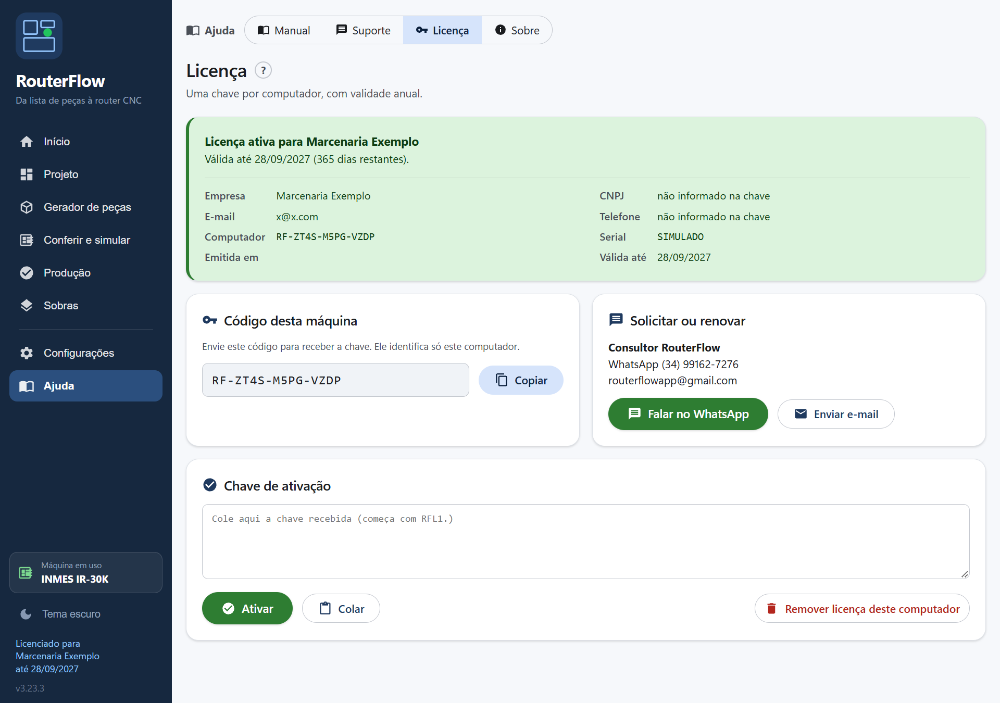
Como ativar:
- Copie o Código desta máquina (formato RF-XXXX-XXXX-XXXX). O botão "Copiar" põe na área de transferência.
- Clique em Falar no WhatsApp: a mensagem já vai montada com o código. Complete com razão social, CNPJ, e-mail e telefone da empresa.
- Você recebe uma chave que começa com RFL1. Cole no campo "Chave de ativação" (ou clique em "Colar da área de transferência") e em Ativar.
- O rodapé do menu lateral passa a mostrar "Licenciado para sua empresa até data".
A licença é presa a este computador e vale por 12 meses. A partir de 30 dias antes do vencimento, uma faixa no topo avisa; com 7 e 1 dia ela fica vermelha. Vencida, o programa bloqueia Projeto, Gerador de peças, Conferir e simular e Produção até a chave nova. Com internet, a renovação chega sozinha na próxima abertura, sem colar nada. "Verificar agora" força a consulta na hora.
O RouterFlow se atualiza sozinho: quando sai versão nova, ele baixa, instala e abre de novo. Leva cerca de um minuto e a licença continua a mesma. Nenhuma configuração é perdida na atualização.
A tela Início
O Início mostra o que fazer agora. Ele muda conforme o momento: projeto aberto, produção pela metade ou nada começado.
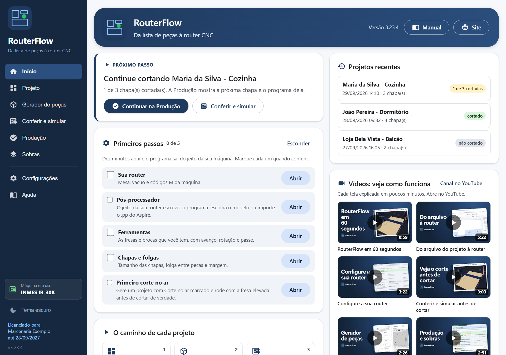
- Próximo passo: o cartão de cima diz onde você parou e leva direto para lá. Se o último que você mexeu é um rascunho do Gerador ou do Montador, Continue reabre como estava. Sem projeto aberto, Comece um projeto (escolher a lista de peças ou abrir o Gerador de peças). Com o projeto gerado, Conferir e simular antes da primeira chapa. Com chapas já cortadas, Continuar na Produção, com quantas faltam. Um projeto de outro dia cortado pela metade aparece aqui para continuar.
- Primeiros passos: na primeira vez, a lista do que ajustar antes do primeiro corte: Sua router, Pós-processador, Ferramentas, Chapas e folgas e o primeiro corte no ar. Abrir leva ao tópico certo das Configurações; marque cada um quando conferir. Quando tudo está marcado, ou em Esconder, a lista some.
- O caminho de cada projeto: as cinco telas do dia a dia, na ordem, com uma linha sobre cada uma. Clique para ir.
- Projetos recentes: os últimos 5 de Meus projetos, de qualquer origem, com a mesma situação de lá (Rascunho, Gerado, Cortando, Pronto). Clique para abrir: o rascunho abre no Gerador, o que está pela metade abre na Produção. Ver todos leva a Meus projetos.
- Vídeos: veja como funciona: os vídeos do canal do RouterFlow no YouTube, um para cada parte do programa (do arquivo do projeto à router, configurar a router, conferir e simular, Gerador de peças, produção e sobras) e os curtos de menos de um minuto. Clique para assistir no YouTube; Canal no YouTube abre todos.
- Novidades da versão: o que chegou na versão mais nova. Todas as versões abre a lista em Ajuda, Sobre.
- No alto, Manual abre este manual e Site abre www.routerflow.com.br.
O menu da esquerda tem o caminho do projeto em cima (Início, Projeto, Gerador de peças, Conferir e simular, Produção, Sobras) e, embaixo, Configurações e Ajuda. A Ajuda junta quatro abas:
- Manual: este manual dentro do programa, com busca. Digite uma palavra (passe, folga, pendrive, etiqueta) e aparecem só os tópicos que falam dela, com a palavra destacada. Os capítulos ficam na coluna da esquerda. As figuras aparecem quando o computador está na internet.
- Suporte: WhatsApp e e-mail do Consultor RouterFlow e Enviar o projeto ao suporte (veja "Enviar ao suporte" no capítulo do Projeto).
- Licença: código da máquina, chave de ativação e validade.
- Sobre: o que o RouterFlow faz, Procurar atualização, o site, por que ele existe e as novidades de cada versão desde a 3.20.0.
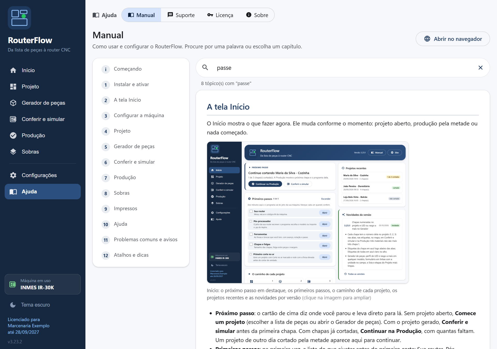
- No menu lateral, embaixo, está a máquina em uso. Clique nela para trocar de máquina ou importar um pós-processador.
Antes do primeiro projeto: configurar a máquina
Abra Configurações. Quase tudo ali pertence à máquina em uso: mesa, vácuo, ferramentas, pós-processador e corte. Os padrões funcionam; mexa só no que a sua router pedir. Todo tópico tem um botão ? ao lado do título que explica por que ele existe, o que dá para fazer, como mexer e o que aparece ali. No fim do balão, Ver no manual, com imagens abre este manual direto na seção daquele tópico.
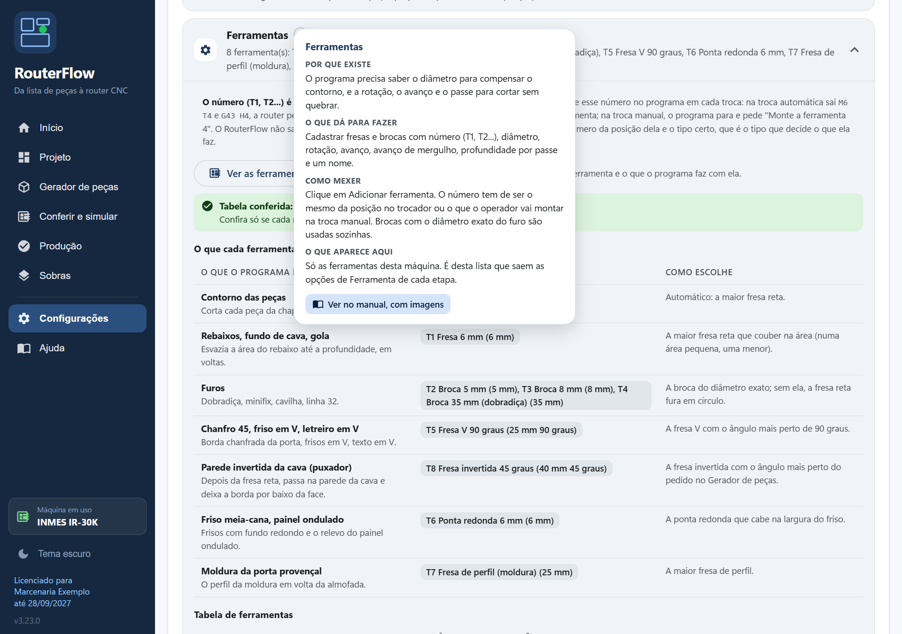
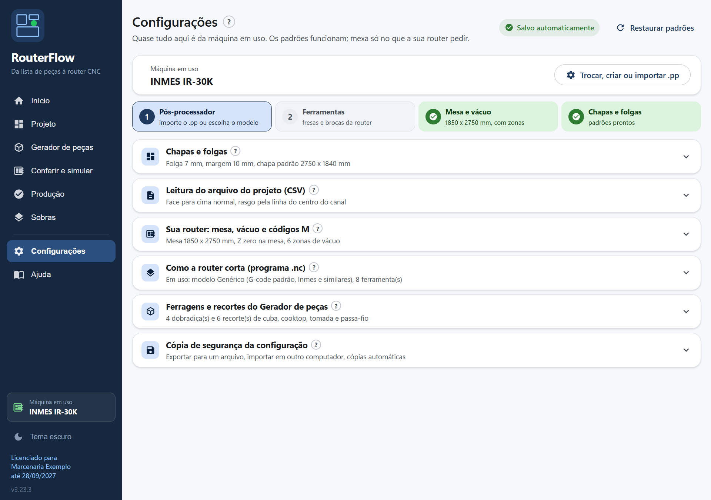
Não existe botão Salvar: cada campo é salvo na hora em que você muda e sai dele, e o aviso verde no alto mostra "Salvo às" com a hora. Restaurar padrões volta a máquina em uso aos valores de fábrica, sem mexer no estoque de sobras nem nas outras máquinas.
A linha do tempo "por onde começar" marca em verde o que já está pronto. A ordem certa é: 1 Pós-processador, 2 Ferramentas, 3 Mesa e vácuo, 4 Chapas e folgas.
Perfis de máquina
Cada máquina guarda a mesa, o vácuo, as ferramentas e o pós-processador. Clique em Trocar, criar ou importar .pp (ou na máquina do menu lateral).
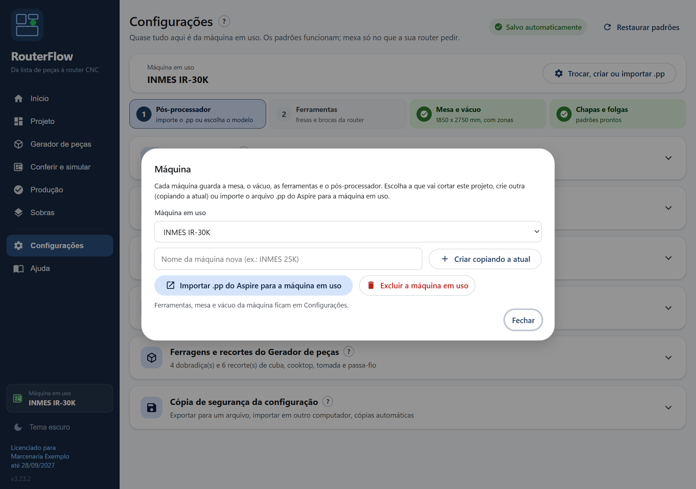
- Escolher: a lista mostra as máquinas cadastradas; selecione e confirme. A tela Projeto passa a gerar para ela.
- Criar: dê um nome (por exemplo "INMES 25K") e escolha se copia a configuração da máquina atual. Depois ajuste o que for diferente.
- Importar .pp do Aspire: se você já tem o arquivo de pós-processador que usa no Aspire, importe. O RouterFlow lê cabeçalho, troca de ferramenta, rodapé, numeração e formato dos números.
- Renomear e Excluir ficam na mesma janela. A máquina em uso não pode ser excluída.
Pós-processador
É o tradutor entre o RouterFlow e o controlador da sua router: define como o programa começa, como troca de ferramenta, como termina e como escreve os números.
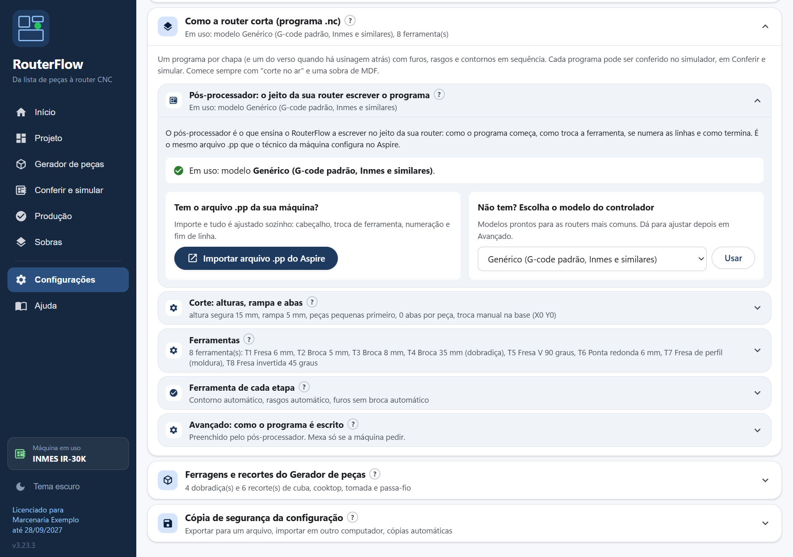
| O que fazer | Quando |
|---|---|
| Importar arquivo .pp do Aspire | Você já corta com o Aspire nessa máquina. É o caminho mais seguro: o programa sai exatamente como a máquina já conhece |
| Escolher o modelo INMES IR-30K, programa real | Router Inmes sem o .pp em mãos. Copiado de um programa que rodou na máquina: sem numeração de linha |
| Modelo INMES IR-30K / IN-50K | Formato do .pp de fábrica da Inmes, com numeração de linha |
| Mach3, GRBL, Fanuc | Controladores desses tipos. Fanuc serve para Syntec, Weihong e LNC |
| Genérico | G-code padrão, para testar em qualquer máquina |
Depois de escolher, o tópico "Avançado" mostra os textos que o modelo gerou. Não precisa mexer neles.
Ferramentas
É a tabela das fresas e brocas da sua router. O programa .nc usa esses números para compensar o contorno, decidir qual ferramenta cabe em cada furo e rasgo, e escrever a rotação, o avanço e a profundidade de cada passada.
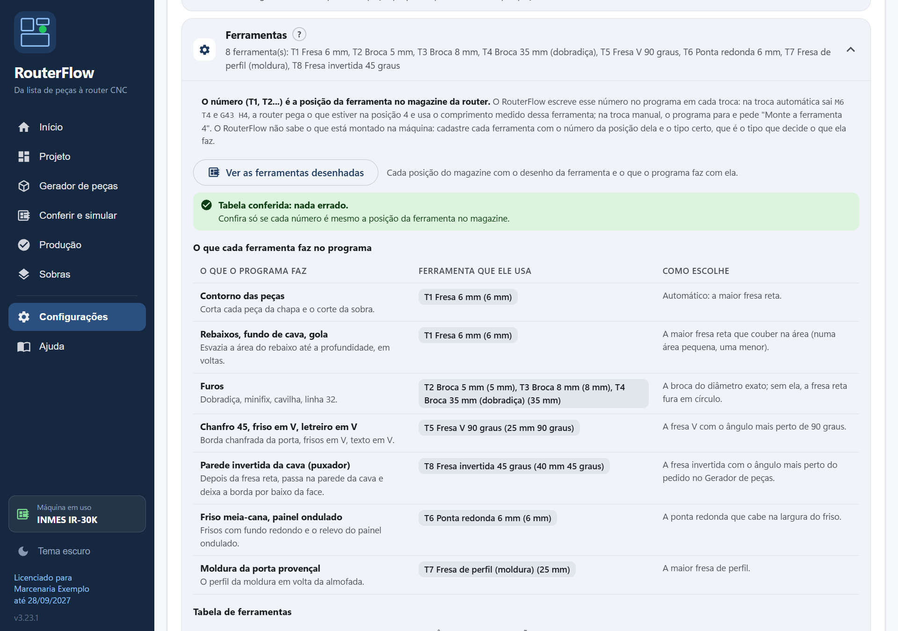
O número é a posição no magazine. O T de cada linha (T1, T2, T4...) é o número que o RouterFlow escreve no programa em cada troca de ferramenta. Na troca automática sai, por exemplo, T4 M6 e G43 H4 (o T vem antes do M6: muitos controladores, como o da INMES, leem a linha da esquerda para a direita, e com o M6 antes trocariam para a ferramenta que já está na cabeça): a router vai até a posição 4 do magazine, pega o que estiver lá e usa o comprimento medido dessa ferramenta (o H) para acertar a profundidade. Na troca manual, o programa para e pede "Monte a ferramenta 4". O RouterFlow não sabe o que está montado na máquina: ele confia na tabela. Por isso:
- Cada ferramenta com o número da posição dela no magazine (se a fresa invertida está na posição 4, ela é a T4).
- O tipo certo: é o tipo que decide o que ela faz no programa (veja abaixo). Uma fresa invertida cadastrada como Fresa vira candidata a cortar contornos e esvaziar rebaixos.
- O comprimento de cada ferramenta medido na controladora, como vocês já fazem ao trocar uma fresa.
O que cada ferramenta faz no programa. Em cima da tabela, o quadro mostra cada função (contorno, rebaixos, furos, chanfro 45, parede invertida da cava, friso meia-cana, moldura provençal), a ferramenta da sua tabela que o programa vai usar e como ele escolhe. Função sem ferramenta aparece como Não cadastrada, com o botão Adicionar: ele cria a linha já com o tipo e valores de partida; confira o número (a posição no magazine), o diâmetro, o ângulo e as velocidades da sua ferramenta.
Alertas da tabela. O RouterFlow confere a tabela enquanto você digita e avisa em vermelho o que faz o programa sair errado, e em amarelo o que vale conferir:
- ferramenta sem número, ou o mesmo número em duas linhas;
- nenhuma fresa reta (o contorno não sai);
- uma ferramenta com nome de fresa invertida ("cava", "invertida", "rabo de andorinha") cadastrada como Fresa, ou com nome de fresa V ou de broca em outro tipo;
- contorno em Automático escolhendo uma fresa grande (a maior fresa reta), que talvez não seja a de cortar as peças;
- fresa invertida sem ângulo, ou pequena demais para a profundidade; fresa V sem ângulo;
- mergulho maior que o avanço, rotação ou avanço zerados;
- Ferramenta de cada etapa apontando para um número que não está na tabela.
A quantidade de erros aparece também no título do tópico, e a tela Projeto avisa na etapa 2, antes de gerar, quando a tabela tem erro.
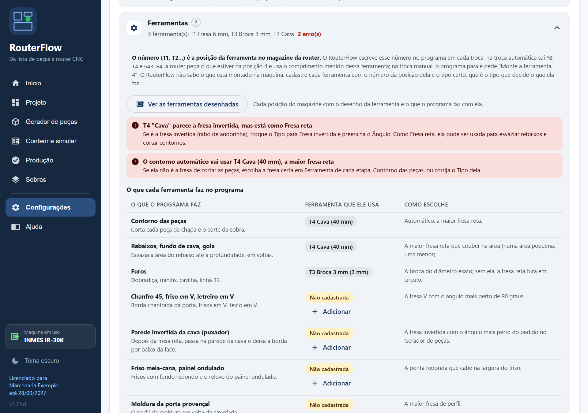
Ver as ferramentas desenhadas. O botão abre o magazine posição por posição: cada T com a ferramenta desenhada pelo tipo e pelas medidas da tabela (o diâmetro, e o ângulo na fresa V e na invertida), separada do cone como numa vista explodida, com a rotação, o avanço, o mergulho e o passe, e embaixo No programa: o que o programa faz com ela (contorno, rebaixos, furos de qual diâmetro, chanfro, parede invertida...). Os alertas daquela ferramenta aparecem no próprio cartão, e uma posição que falta na sequência aparece como Vazia na tabela: o programa nunca chama aquela posição. No fim, Os tipos de ferramenta e onde medir mostra cada tipo desenhado e onde se mede o Ø e o ângulo (na fresa V, o diâmetro de cima do cone; na invertida, o de baixo, o maior).
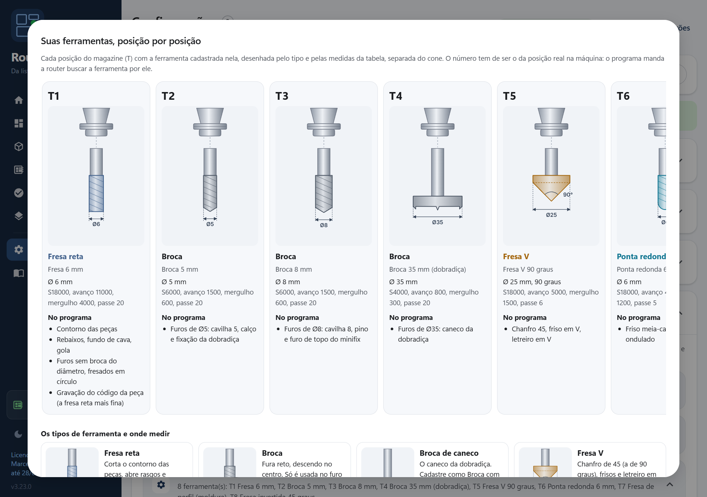
Os tipos
| Tipo | Para que serve | Como o programa usa |
|---|---|---|
| Fresa reta | Contornos das peças, rasgos, rebaixos e furos que não têm broca do diâmetro (fresados em círculo) | Anda pelo contorno deslocada meio diâmetro para fora da peça; desce em passes até a profundidade |
| Broca | Furos de face: cavilha, minifix, dobradiça | Só é usada quando o diâmetro dela é igual ao do furo. Desce reta no centro do furo |
| Fresa V | Chanfro de 45 graus (cava 45), frisos em V, letreiro em V | Anda pelo centro do traço; a largura na chapa sai da profundidade (a de 90 graus abre o dobro da profundidade). Preencha a coluna Ângulo |
| Ponta redonda | Frisos com fundo em meia-cana e o relevo 3D (painel ondulado) | Anda pelo centro do friso; a largura sai da profundidade até chegar ao diâmetro. No relevo, segue a profundidade de cada ponto |
| Fresa de perfil | Moldura da porta provençal (romana, meia-cana, bico de pato) | Anda pelo desenho da moldura na profundidade pedida; o desenho sai com a forma da fresa |
| Fresa invertida (de cava, rabo de andorinha) | Cava de puxador com a parede invertida: a borda inclinada por baixo da face, na cava cortada ou com fundo | Mais larga embaixo que em cima. Desce uma vez só, devagar (o mergulho da ferramenta), até a profundidade inteira, e anda com o centro afastado da parede o raio que ela tem na altura da face. Não desce em voltas: a parede inclinada sairia em degraus. Preencha o Ângulo (a inclinação da lateral: 45 na invertida de 45, 35 na de puxador de 35) e o diâmetro de baixo. Com mais de uma, o programa usa a do ângulo que a peça pede |
| Fresa de arredondar borda | Borda arredondada em volta da peça | Dá uma volta só em volta da peça, antes do contorno, na profundidade do raio. O centro anda por fora da borda (metade do diâmetro menos o raio): o perfil arredonda a quina de cima. No campo Ângulo ou raio vai o raio do perfil (6 na fresa de raio 6) e no diâmetro, o maior da fresa. A peça com borda arredondada ganha espaço livre em volta no encaixe, para a fresa não entrar na peça vizinha |
Os padrões de fábrica já trazem uma Fresa V 90 graus (T5, diâmetro 25), uma Ponta redonda 6 mm (T6), uma Fresa de perfil (T7, diâmetro 25) e uma Fresa invertida 45 graus (T8, diâmetro 40). Quem já tinha a tabela salva cadastra a fresa invertida com Adicionar ferramenta, ou com o botão Adicionar do quadro O que cada ferramenta faz. Se a sua router não tem essas ferramentas, apague as linhas: os modelos que pedem V ou ponta redonda avisam no projeto.
Cada coluna
| Coluna | O que é | O que vira no programa |
|---|---|---|
| Nº | Número da ferramenta: T1, T2... | O T da troca. Tem de ser o mesmo número da posição no trocador, ou o que o operador vai montar quando o programa parar na troca manual |
| Tipo | Fresa reta, Broca, Fresa V, Ponta redonda, Fresa de perfil, Fresa invertida (de cava, rabo de andorinha) ou Fresa de arredondar borda | Decide a regra de escolha acima |
| Ø (mm) | Diâmetro de corte | Compensação do contorno e teste "cabe no rasgo?" e "cabe no furo?". Na fresa V, o diâmetro maior da parte em ângulo |
| Ângulo | Na fresa V: ângulo da ponta (90, 60...). Na fresa invertida: a inclinação da lateral (45 na invertida de 45). Vazio, o programa usa 35 e a tabela avisa | A V de 90 faz chanfro de 45 graus. Com o ângulo e o diâmetro o programa sabe até onde ela corta |
| Rotação | Rotação do spindle em rpm | O S do programa (M3 S18000) |
| Avanço (mm/min) | Velocidade de corte andando em X e Y | O F dos movimentos no plano |
| Mergulho (mm/min) | Velocidade descendo em Z ao entrar no material | O F das descidas: furos, começo de cada passe e a rampa |
| Passe (mm) | Profundidade máxima de cada passada | Chapa de 18 com passe 6 sai em três voltas; com passe 20 sai em uma só. Em broca, é quanto desce antes de subir para tirar o cavaco |
| Nome | Como você chama a ferramenta | Sai no comentário da troca e nas listas de Conferir e simular |
Valores recomendados
Os padrões de fábrica são os de uma router Inmes IR-30K cortando MDF de 15 e 18 mm com fresa de 6 mm, medidos num programa real da máquina. Use como ponto de partida:
| Ferramenta | Rotação | Avanço | Mergulho | Passe | Observação |
|---|---|---|---|---|---|
| Fresa 6 mm (contorno, MDF/MDP) | 18000 | 11000 | 4000 | 20 | Padrão. Uma volta só em chapa de 15 ou 18 |
| Fresa 6 mm, máquina mais leve ou fresa gasta | 18000 | 3000 a 5000 | 800 a 1200 | 6 | Três voltas em 18 mm; passe igual ao diâmetro é a regra segura |
| Fresa 8 mm (contorno em chapa grossa) | 18000 | 12000 | 4000 | 20 | Mais robusta, acabamento parecido |
| Fresa 4 mm (rasgos de fundo, canais estreitos) | 20000 | 5000 | 1500 | 4 | Rasgo de 4 mm de largura só sai com ela. Passe pequeno: a fresa é fina |
| Fresa 3 mm (detalhes) | 20000 | 3000 | 800 | 3 | Só para o que a fresa de 6 não alcança |
| Broca 5 mm (cavilha) | 6000 | 1500 | 600 | 20 | Furo de uma descida só. Passe pequeno (1 mm, por exemplo) faz a broca subir e descer várias vezes no mesmo furo; ao atualizar, broca com passe menor que 5 mm vira 20 sozinha |
| Broca 8 mm (minifix, parafuso) | 6000 | 1500 | 600 | 20 | |
| Broca 15 mm (corpo do minifix) | 5000 | 1000 | 400 | 20 | |
| Fresa V 90 graus, diâmetro 25 | 18000 | 5000 | 1500 | 6 | Chanfro e friso em V. Passe menor que a fresa reta: a ponta é frágil |
| Ponta redonda 6 mm | 18000 | 4000 | 1200 | 5 | Friso em meia-cana e relevo 3D. Onda mais funda que o passe sai em níveis |
| Fresa de perfil 25 mm | 18000 | 4000 | 1000 | 7 | Moldura provençal. Confira a profundidade que a sua fresa pede |
| Fresa invertida 45 graus, diâmetro 40 | 16000 | 2500 | 300 | 20 | Cava de puxador. Uma passada só na profundidade; mergulho baixo porque ela desce com a boca inteira |
| Broca 35 mm (caneco da dobradiça) | 4000 | 800 | 300 | 20 | Se engasgar ou queimar, volte o passe para 6 |
| Compensado ou madeira maciça | igual | 30% menor | 30% menor | igual | Fibra longa segura mais |
| Acrílico ou PVC expandido | 12000 | 1500 a 2500 | 500 | igual ao diâmetro | Rotação alta derrete |
Regras que não mudam:
- Mergulho sempre menor que o avanço. A ponta da fresa corta pior que o lado.
- Para cortar de uma vez até a mesa, o passe tem de ser maior que a espessura mais a entrada na mesa: 16 para chapa de 15, 19 para chapa de 18. O 20 cobre as duas.
- Barulho e acabamento mandam. Fresa gritando, lascando a chapa ou peça com marca de queimado: reduza o avanço em 20% e teste de novo. Cheiro de queimado com avanço baixo: aumente o avanço ou reduza a rotação.
- Fresa nova, valores novos. Trocou a fresa por outra de diâmetro diferente, mude o Ø aqui, senão o contorno sai com a medida errada.
Como o programa escolhe a ferramenta
- Furo com broca do diâmetro exato na tabela: usa a broca.
- Furo sem broca: usa a fresa escolhida em "Ferramenta de cada etapa" (ou a maior que cabe), fresando em círculo.
- Rasgo: fresa escolhida para rasgos, desde que caiba na largura do canal; senão a maior que cabe.
- Contorno: fresa escolhida para contornos, ou a maior cadastrada.
Se nenhuma ferramenta cabe num furo ou rasgo, a peça sai com aviso na ficha e no resultado ("nenhuma ferramenta cabe nesse furo"), e o botão do aviso abre esta tabela.
Adicionar, editar e remover: "Adicionar ferramenta" cria uma linha nova; o X no fim da linha remove; qualquer campo é editável direto na tabela, e cada mudança é salva na hora.
Ferramenta de cada etapa
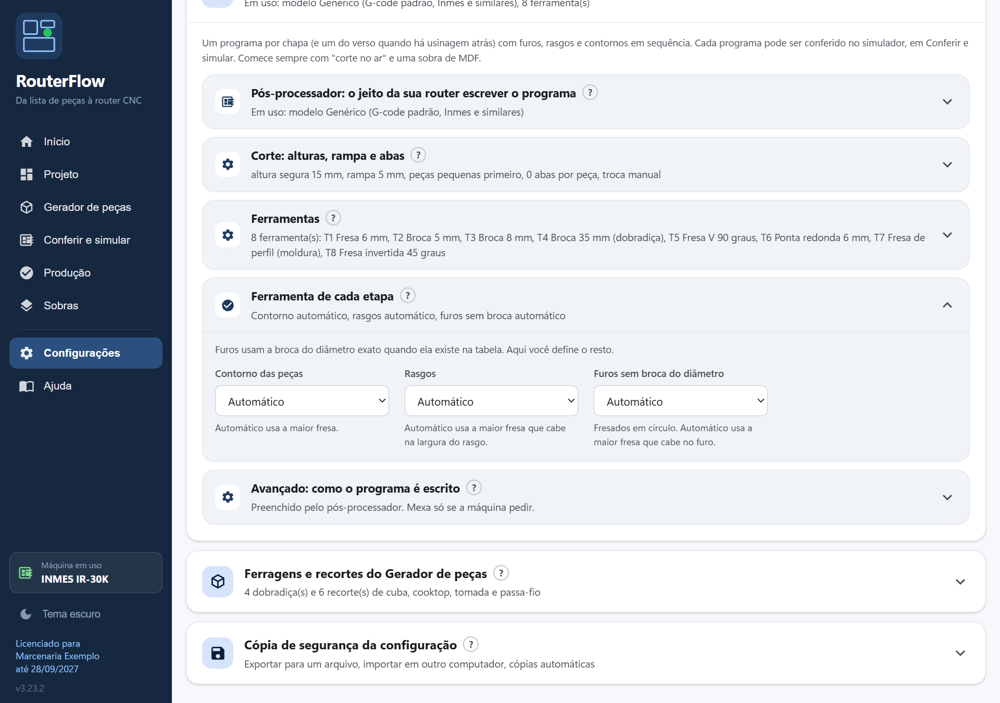
Três seleções, cada uma com a lista das fresas cadastradas:
| Etapa | Automático faz | Quando fixar |
|---|---|---|
| Contorno das peças | Usa a maior fresa cadastrada | Você tem uma fresa de 8 para desbaste e quer o contorno com a de 6 |
| Rasgos | Usa a maior fresa que cabe na largura do rasgo | Quer sempre a fresa de 4 nos rasgos, mesmo em canais largos |
| Furos sem broca do diâmetro | Usa a maior fresa que cabe no furo | Quer uma fresa específica para fresar furos grandes |
Se a fresa fixada não couber no rasgo ou no furo, o programa usa a maior que cabe e avisa. Programa já gerado não muda: gere o projeto de novo depois de salvar.
Corte: alturas, rampa e abas
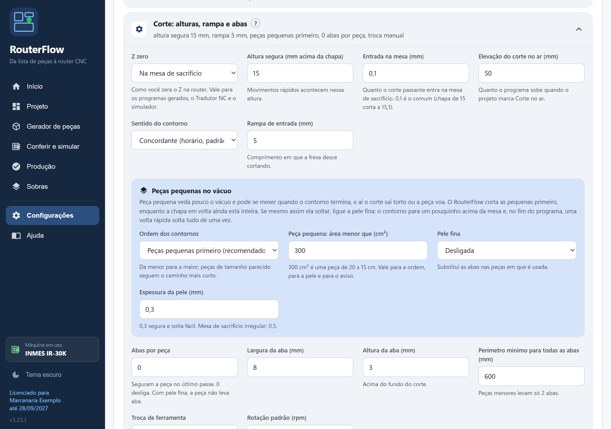
| Campo | O que é | Padrão | Quando mudar |
|---|---|---|---|
| Z zero | Onde o operador zera o Z: na mesa de sacrifício ou no topo da chapa | Na mesa | Tem de ser igual ao jeito que o operador zera. Se ele zera no topo da chapa, mude aqui, senão todo o corte fica deslocado uma espessura |
| Altura segura (mm acima da chapa) | Altura dos movimentos rápidos entre operações | 15 | Grampos ou batentes altos na mesa: aumente |
| Entrada na mesa (mm) | Quanto o corte passante entra na mesa de sacrifício | 0,1 | É o comum (chapa de 15 corta a 15,1). Mesa muito irregular: 0,3 |
| Elevação do corte no ar (mm) | Quanto o programa sobe no modo de teste sem chapa | 50 | Só se 50 mm não der para enxergar o percurso |
| Sentido do contorno | Concordante (horário, padrão para MDF) ou discordante | Concordante | Discordante dá acabamento diferente em alguns materiais; teste numa sobra |
| Rampa de entrada (mm) | Comprimento em que a fresa desce cortando, em vez de mergulhar reto | 5 | Máquina leve ou fresa fina: 20 a 40 poupa a ponta da fresa. 0 mergulha reto |
| Ordem dos contornos | Peças pequenas primeiro (da menor para a maior) ou só o caminho mais curto | Peças pequenas primeiro | Quase nunca. Veja "Peças pequenas no vácuo" logo abaixo |
| Peça pequena: área menor que (cm²) | Abaixo disso a peça conta como pequena: para a ordem, para a pele fina e para o aviso | 300 (uma peça de 20 x 15 cm) | Vácuo forte: 200. Vácuo fraco ou mesa gasta: 500 |
| Pele fina | Desligada, só nas peças pequenas ou em todas | Desligada | Peça pequena se mexendo no fim do corte: "Só nas peças pequenas" |
| Espessura da pele (mm) | Quanto de material fica no fundo do contorno até a volta final | 0,3 | Mesa de sacrifício irregular: 0,5 |
| Abas por peça | Pontes de material deixadas no último passe para a peça não soltar | 0 | Sem vácuo ou com vácuo fraco: 2 a 4. Com abas, o operador quebra e lixa depois. Peça com pele fina não leva aba |
| Largura da aba (mm) | Comprimento da ponte | 8 | Peças pesadas: 10 a 12 |
| Altura da aba (mm) | Quanto de material fica, acima do fundo do corte | 3 | Chapa de 6 mm: 2 |
| Perímetro mínimo para todas as abas (mm) | Peças menores que isso levam só 2 abas | 600 | Raramente |
| Trocar a ferramenta | Automático, Sempre na base ou No lugar | Automático | Automático: na troca automática o programa sobe e manda a troca ali mesmo, e o próprio M6 da máquina leva a cabeça ao magazine e volta; na troca manual o programa sobe, leva a cabeça até a Base da troca (X e Y) e para para você trocar. Sempre na base: vai à base nas duas. No lugar: nunca vai à base |
| Base da troca: X e Y | mm, medidos do zero da máquina escolhido no Projeto | 0 e 0 (o próprio canto do zero) | Onde o cabeçote para para trocar. Confira no primeiro programa em corte no ar se é um bom lugar para a troca |
| Rotação padrão (rpm) | Usada quando a ferramenta não tem rotação própria | 18000 | Raramente |
| Código que baixa a coifa de exaustão | O código M que desce a coifa (o aspirador em volta da ferramenta) | M150 nas INMES; vazio nas outras | Sai no começo do programa e depois de cada troca de ferramenta, porque a troca sobe a coifa. Vazio: o programa não manda nada |
Como a sua router troca de ferramenta
No alto do tópico Corte, três cartões: escolha o que é a sua máquina. O programa e o simulador seguem essa escolha.
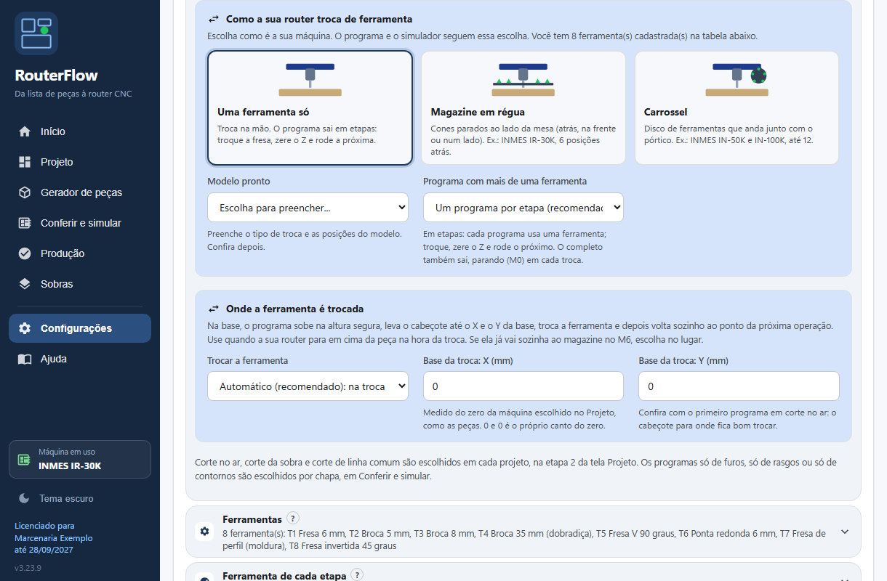
- Uma ferramenta só: a maioria das routers. O operador troca a fresa na mão e zera o Z de novo. Quando a chapa usa mais de uma ferramenta (broca, fresa reta, fresa invertida), além do programa completo saem os programas em etapas, um por ferramenta, na ordem certa:
..._ETAPA1_T2.nc,..._ETAPA2_T1.nc. Monte a ferramenta da etapa, zere o Z com ela e rode (por isso o programa da etapa não usa a medida do probe, o G43 H); não tire a chapa da mesa entre uma etapa e outra. A mesma ferramenta pode voltar numa etapa depois (por exemplo, a fresa reta abre a cava, a invertida faz a parede e a fresa reta volta para cortar as peças, que soltam por último). O completo também sai e para (M0) em cada troca, para quem tem sensor de altura e prefere um arquivo só. Em Programa com mais de uma ferramenta dá para pedir só o completo. - Magazine em régua: cones parados ao lado da mesa (atrás, na frente ou num lado). Escolha Posições no magazine e Onde fica a régua. A INMES IR-30K tem 6 posições atrás da mesa. O programa troca sozinho (T M6).
- Carrossel: disco de ferramentas preso ao pórtico, que anda junto com ele e gira para entregar a ferramenta (INMES IN-50K e IN-100K, até 12; muitas chinesas com 8 ou 12). O programa troca sozinho (T M6).
- Modelo pronto preenche o tipo e as posições de modelos conhecidos; confira depois.
Antes de tudo, meça cada ferramenta no probe da máquina. Na troca automática o programa troca sozinho (T3 M6) e logo depois usa o comprimento medido daquela ferramenta (G43 H3), como os programas da própria fábrica. Esse comprimento fica guardado no comando e só é medido na máquina: no guia da INMES IR-30K, opções, probe, número da ferramenta. Ferramenta sem medida, ou medida com outro número, desce errado e pode entrar na mesa e quebrar. Meça de novo sempre que trocar ou reapertar a fresa no cone. Confira também se a ferramenta atual que o comando mostra (no DDCS da INMES, "Ferr. Atual") é a que está mesmo na cabeça: com outro número, a troca não acontece. Ferramenta nova: rode o primeiro programa no ar, com FRO baixo (10 a 20%) e a mão no RESET. O programa traz esse lembrete no começo ("ANTES DE TUDO: MECA NO PROBE..."), a Produção mostra uma faixa de alerta no alto e, na primeira vez que aparece cada número de ferramenta, pede a confirmação "Já medi todas no probe" antes de mandar o programa para a máquina; a conferência do simulador também lembra.
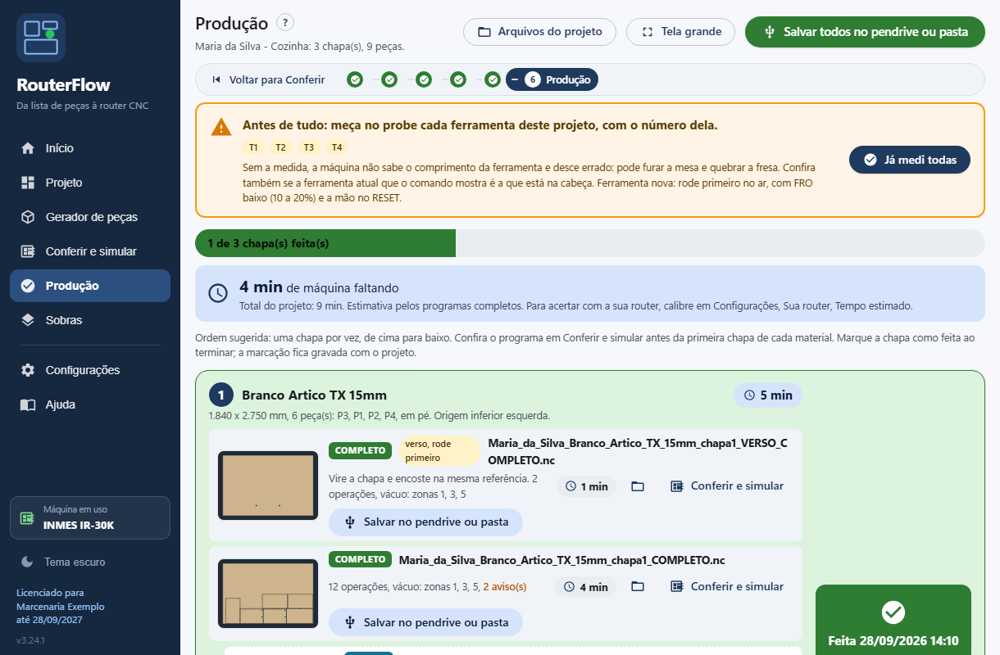
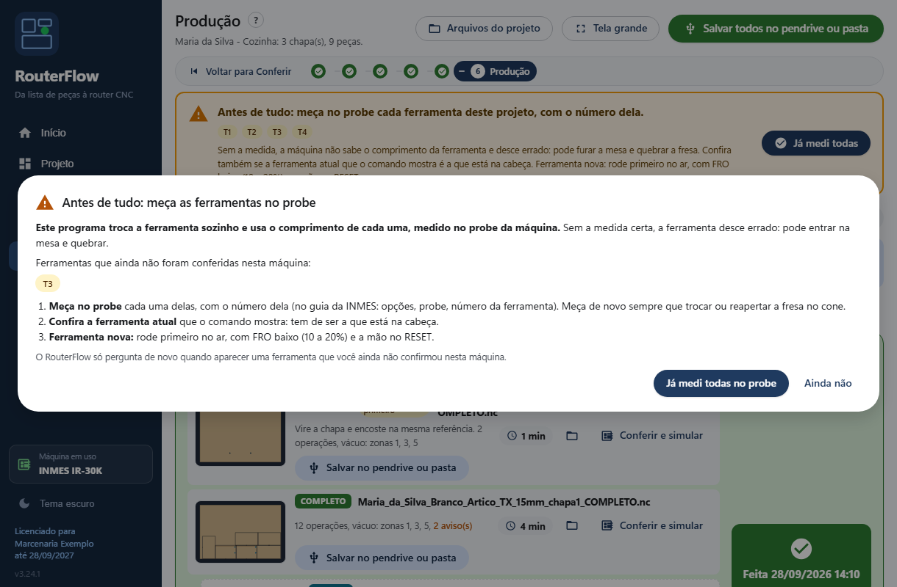
O número T de cada ferramenta da tabela é a posição dela no magazine. Uma ferramenta com número maior que as posições (T8 num magazine de 6) aparece como erro na conferência da tabela. Em Conferir e simular, a máquina aparece como ela é: sem magazine na de uma ferramenta (o simulador para e avisa "Pare: troque a ferramenta na mão e zere o Z"), com a régua no lado escolhido ou com o carrossel andando junto com o pórtico; a lista das chapas mostra os botões Etapa 1, Etapa 2... e a Produção lista cada etapa com o selo ETAPA.
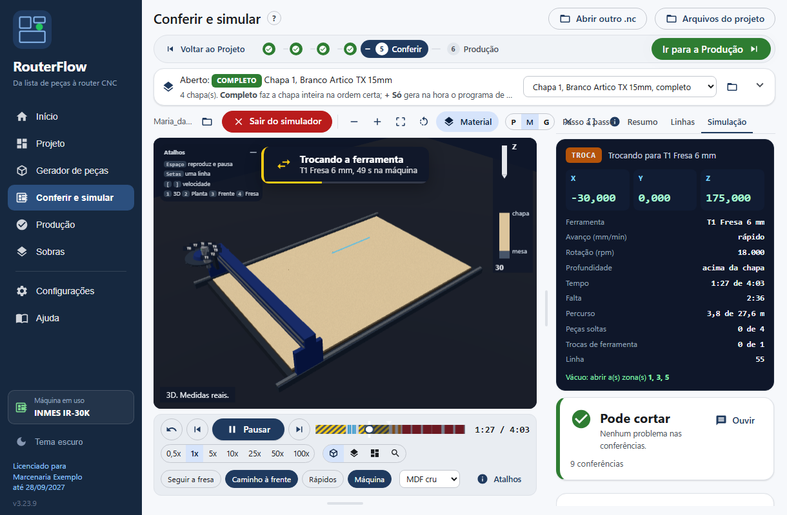
Peças pequenas no vácuo
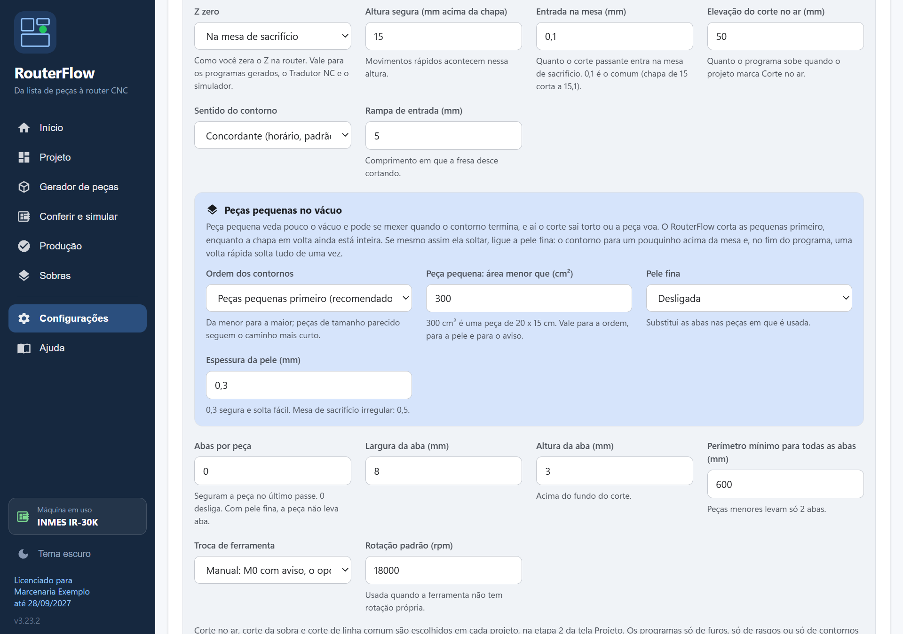
Uma peça pequena veda pouco o vácuo. Quando o contorno fecha, ela pode se mexer um pouco: o fim do corte sai torto, a fresa pega a peça ou ela voa. O RouterFlow resolve isso de dois jeitos:
- Peças pequenas primeiro (ligado de fábrica). Os contornos vão da menor peça para a maior; peças de tamanho parecido seguem o caminho mais curto. A pequena solta enquanto a chapa em volta ainda está inteira e segurando o vácuo. As grandes, que seguram sozinhas, ficam para o fim.
- Pele fina (desligada de fábrica; ligue se a peça ainda se mexer). O contorno para 0,3 mm acima da mesa, então a peça continua presa por uma película de material. No fim do programa, depois de todos os contornos, uma volta rápida em cada peça com pele corta essa película e solta tudo de uma vez. Com "Só nas peças pequenas", as grandes cortam direto até a mesa, como sempre.
Quando uma chapa tem peça pequena e a pele e as abas estão desligadas, o projeto mostra o aviso "Peças pequenas no vácuo" com o botão Ligar a pele fina, que abre este tópico. O programa escreve no começo "PELE FINA" e "ORDEM: pecas pequenas primeiro" para o operador saber, e Conferir e simular mostra a volta final como a operação Pele.
Este tópico só guarda valores da máquina. As escolhas que mudam de um projeto para outro ficam onde o projeto é feito:
- Corte no ar, cortar a sobra da chapa e corte de linha comum: na etapa 2 da tela Projeto, em cada projeto. O RouterFlow lembra as duas últimas para o próximo; o corte no ar nunca fica marcado sozinho.
- Programas só de furos, só de rasgos ou só de contornos: em Conferir e simular, por chapa.
Sua router: mesa, vácuo e códigos M
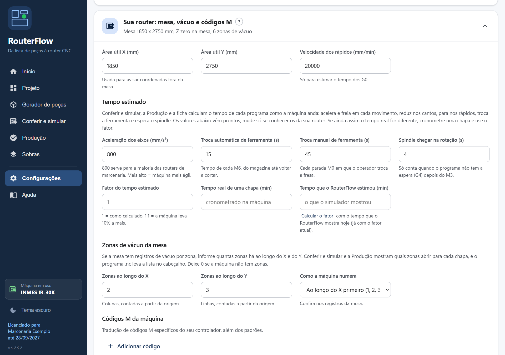
| Campo | O que é | Como preencher |
|---|---|---|
| Área útil X e Y (mm) | O tanto que a fresa alcança na mesa, em X e em Y | Meça ou pegue no manual da máquina. Exemplo Inmes IR-30K: 1850 no X e 2750 no Y. É isso que decide se a chapa entra em pé ou deitada, e Conferir e simular avisa em vermelho o que passa da mesa |
| Velocidade dos rápidos (mm/min) | Só para estimar o tempo dos movimentos G0 | 20000 é comum |
| Aceleração dos eixos (mm/s²) | O tempo é calculado como a máquina anda: acelera e freia em cada movimento, reduz nos cantos fechados (numa curva feita de trechos curtos quase não reduz) e para antes e depois de cada rápido | 800 serve para a maioria das routers de marcenaria. Máquina mais ágil, número maior |
| Troca automática de ferramenta (s) | Quanto leva cada M6, do magazine até voltar a cortar | 15 é comum |
| Troca manual de ferramenta (s) | Cada parada M0 em que o operador troca a fresa | 45 é comum; ponha o que leva na sua oficina |
| Spindle chegar na rotação (s) | A espera depois de ligar o spindle (M3). Se o programa já espera com G4, vale o maior dos dois, sem contar duas vezes | 4 é comum |
| Fator do tempo estimado | Ajuste fino: multiplica a estimativa de Conferir e simular, da Produção e da ficha. Com o cálculo que acelera e freia, costuma ficar perto de 1 | Se o tempo real ainda for diferente, cronometre uma chapa, informe o tempo real e o que o RouterFlow mostrou nos dois campos ao lado e clique em "Calcular o fator". Salva na hora. Na versão 3.22.2 o fator voltou para 1, porque o cálculo novo já conta o que ele corrigia |
| Zonas ao longo do X e do Y | Quantos registros de vácuo a mesa tem em cada sentido | Mesa com 6 zonas em 2 colunas e 3 linhas: X 2, Y 3. Sem zonas: 0 e 0 |
| Como a máquina numera | Se a zona 2 é a próxima no X ou no Y | Confira nos registros da mesa |
| Códigos M | Códigos próprios da máquina: ligar vácuo, exaustor, refrigeração | "Adicionar código", escreva o código (M8, por exemplo), o que ele faz e quando entra: início, fim ou troca |
| Envio dos programas | Como o .nc chega na router: pendrive, pasta de rede ou FTP | Veja abaixo |
Envio dos programas para a máquina
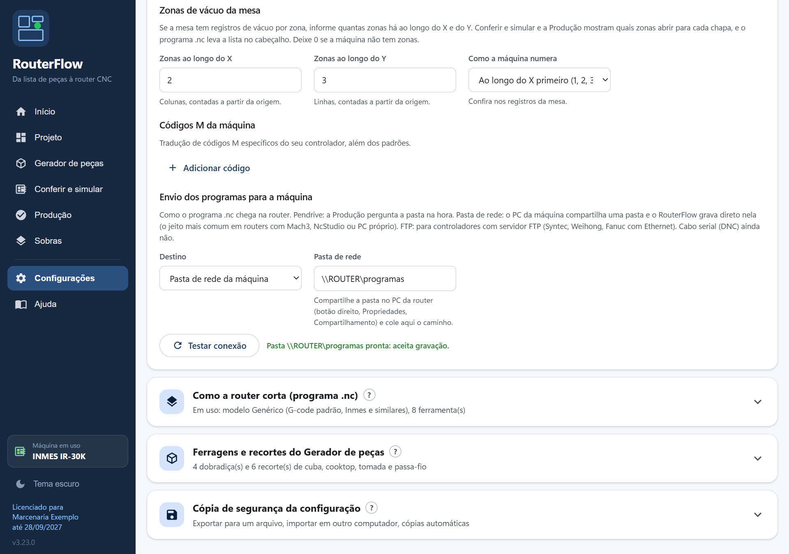
| Destino | Quando usar | Como configurar |
|---|---|---|
| Pendrive | A router não está na rede. É o padrão | Nada a configurar: a Produção pergunta a pasta na hora de copiar |
| Pasta de rede da máquina | A router tem um PC próprio (Mach3, NcStudio, controladores com Windows) ligado na mesma rede da oficina | No PC da router, compartilhe a pasta onde o controlador lê os programas (botão direito na pasta, Propriedades, Compartilhamento, com permissão de gravação). No RouterFlow, cole o caminho: \\NOME-DO-PC\programas, ou a letra da unidade mapeada. Clique em Testar conexão (o caminho é salvo na hora) |
| FTP do controlador | Controladores com servidor FTP: Syntec, Weihong, Fanuc com Ethernet e similares | IP do controlador, porta (21), usuário e senha do manual do controlador, a pasta onde os programas ficam. Testar conexão confere login e pasta. Modo passivo fica marcado |
Com pasta de rede ou FTP configurados, a Produção envia direto: o botão de cada chapa vira "Enviar para a máquina" e o de cima, "Todos os .nc para a máquina". Cabo serial (DNC por RS-232) e envio para GRBL por USB ainda não existem; nesses casos, pendrive. O destino pertence à máquina em uso: cada perfil guarda o seu.
Com as zonas cadastradas, Conferir e simular desenha a grade sobre a mesa e destaca as zonas que cada chapa usa ("abrir 1, 2 e 4, fechar as outras"), a Produção repete isso por chapa, e o programa .nc leva a lista num comentário.
Chapas e folgas
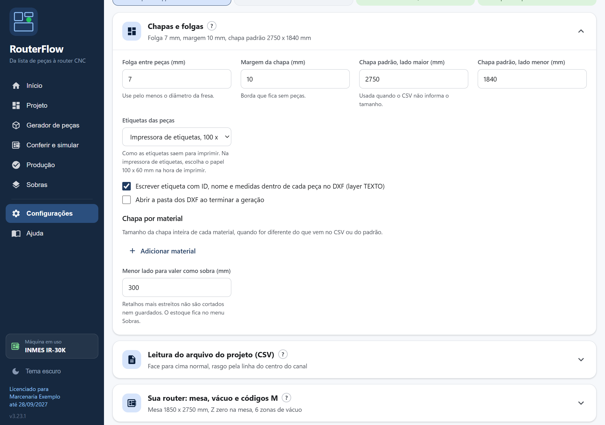
| Campo | O que é | Valor |
|---|---|---|
| Folga entre peças (mm) | Espaço que o nesting deixa entre uma peça e outra | No mínimo o diâmetro da fresa do contorno: 7 para fresa de 6. Para o corte de linha comum, exatamente o diâmetro |
| Margem da chapa (mm) | Borda da chapa que fica sem peças | 10. Chapa com borda batida: 15 a 20 |
| Chapa padrão, lado maior e menor (mm) | Usada quando o CSV não informa o tamanho (lista simples) | 2750 x 1840 é a chapa de MDF comum; 2750 x 1850 para MDP |
| Menor lado para valer como sobra (mm) | Retalhos mais estreitos não são cortados nem guardados. A maior sobra da chapa vem primeiro; o canto que sobra ao lado dela também vira sobra quando os dois lados passam desse valor | 300. Oficina que aproveita tira estreita: 200 |
| Etiquetas das peças | Impressora de etiquetas 100 x 60 mm (uma por etiqueta) ou folha A4 com 8 | Escolha pela impressora que você tem |
| Gravar também em PDF (caixa embaixo) | Grava o PDF de cada impresso ao lado do .html | Ligado. Desligue só se não precisar imprimir em outro computador |
| Chapa por material | Tamanho da chapa de cada material, quando é diferente do padrão | "Adicionar material" com o nome exatamente como vem no CSV, e as medidas |
As caixas: etiqueta com ID, nome e medidas dentro de cada peça no DXF (layer TEXTO, útil em outro programa de CAM) e abrir a pasta dos DXF ao terminar.
Leitura do arquivo do projeto (CSV)
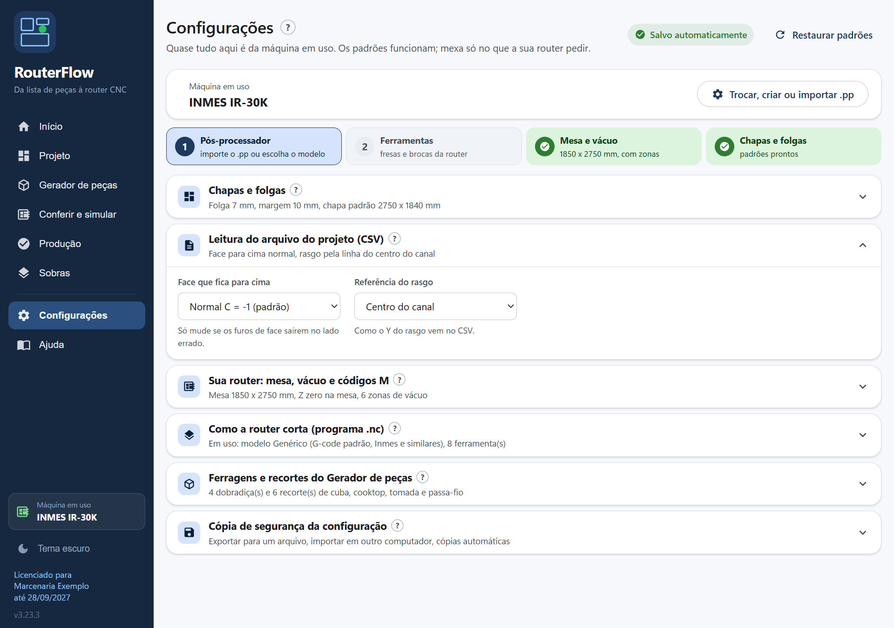
- Face que fica para cima: qual face da peça o software de projeto considera a de cima. Só mude se os furos e rasgos saírem espelhados (na face errada).
- Referência do rasgo: se a medida do rasgo no CSV é a linha do centro do canal ou a borda. Mude se os rasgos saírem deslocados metade da largura.
O mapeamento de colunas de um CSV de outro software não fica aqui: ele é feito na tela Projeto, no botão "Colunas" de cada arquivo, e o RouterFlow lembra por tipo de arquivo.
Avançado: como o programa é escrito
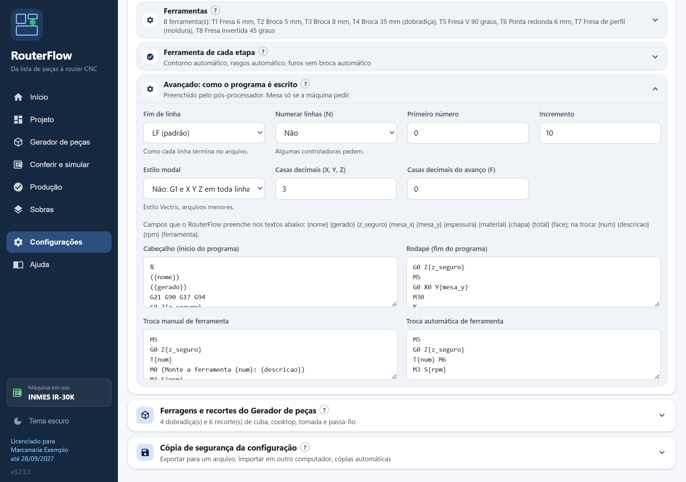
Tudo aqui vem preenchido pelo pós-processador escolhido. Só mexa se a máquina recusar o programa ou se o fabricante pedir algo específico: numeração de linhas (N), fim de linha (CRLF ou LF), escrita modal (repetir ou não o G1 em cada linha), casas decimais, e os textos de cabeçalho, rodapé e troca, que aceitam variáveis como {rpm}, {num} e {z_seguro}. "Restaurar padrões" volta ao modelo escolhido.
Ferragens e recortes do Gerador de peças
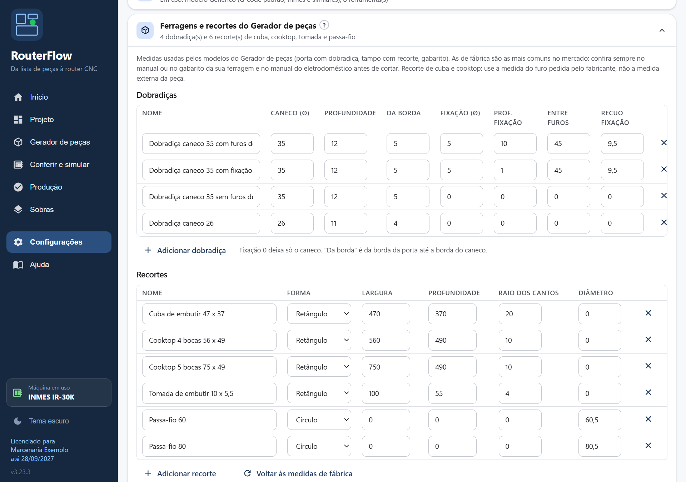
As medidas que os modelos do Gerador de peças usam para furar dobradiça e recortar cuba, cooktop, tomada e passa-fio.
- Dobradiças: nome, diâmetro e profundidade do caneco, distância da borda da porta até a borda do caneco, e os furos de fixação da base (diâmetro, profundidade, distância entre eles e recuo a partir do centro do caneco). Fixação 0 deixa só o caneco. A tabela de fábrica traz três dobradiças de caneco 35: com furos de fixação (5 mm, 10 mm de fundo), com fixação só marcada (5 mm, 1 mm de fundo, só para mostrar onde vai o parafuso) e sem furos de fixação. Quem tinha a antiga "com cavilhas" na tabela recebe as duas primeiras no lugar dela.
- Recortes: nome, forma (retângulo com cantos arredondados ou círculo), largura, profundidade, raio dos cantos e diâmetro. Use a medida do furo pedida pelo fabricante, não a medida externa da cuba ou do cooktop.
- Adicionar cria uma linha nova; o X tira. Voltar às medidas de fábrica repõe a tabela original. Cada mudança é salva na hora. O nome de cada linha aparece na lista de escolha do modelo.
Padrões do Gerador de peças
O jeito da sua marcenaria, para cada peça nova do Gerador já nascer certa: espessura das peças, das frentes e do fundo, o fundo dos módulos (em rasgo, pregado ou sem), a profundidade do rasgo e a distância de trás, a união das peças (minifix e cavilha, só cavilha, parafuso ou sem furação), a dobradiça e a distância da ponta da porta até ela, a altura do rodapé e a fita de borda das peças novas. Deixe em branco o que deve ficar como vem em cada modelo.
Os padrões valem só nos modelos que têm o campo e só nas peças novas: as que já estão na lista não mudam, e as Minhas peças abrem com as medidas guardadas. A espessura só muda nos modelos feitos para a chapa comum (portas, caixas, módulos, prateleiras); a tábua, o relógio, a prateleira flutuante e o gabarito mantêm a deles.
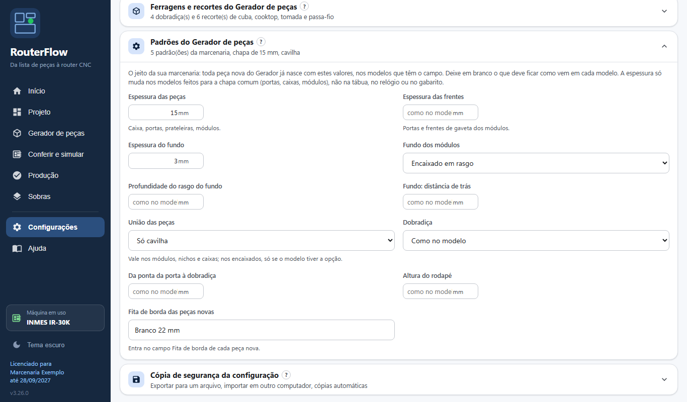
Cópia de segurança da configuração
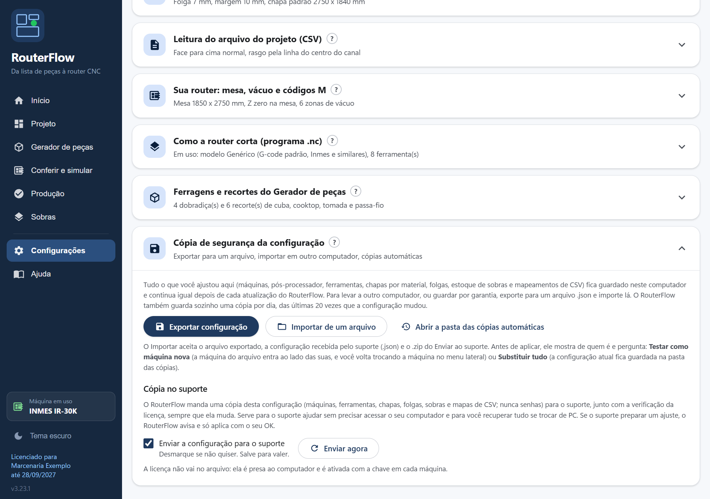
- Exportar configuração salva um arquivo .json com máquinas, pós-processador, ferramentas, chapas, folgas, estoque de sobras e mapeamentos de CSV.
- Importar de um arquivo lê o arquivo exportado, a configuração que um cliente mandou para o suporte (.json) ou o .zip do Enviar ao suporte. Antes de aplicar, mostra de quem é (empresa, código do computador, versão e data), quantas máquinas e ferramentas tem, e pergunta:
- Testar como máquina nova: só a máquina do arquivo (sua router, ferramentas, corte, pós-processador, vácuo e envio) entra, como mais uma máquina com o nome da empresa, por exemplo "INMES IR-30K (Marcenaria Exemplo)", e passa a ser a máquina em uso. Suas máquinas, chapas, folgas, sobras e mapas de CSV ficam como estão. Para voltar, troque a máquina no menu lateral. É o jeito de conferir a configuração de outro computador sem perder a sua.
- Substituir tudo: o arquivo vira a configuração inteira deste computador (para levar a configuração a um PC novo ou depois de formatar). A atual fica guardada antes na pasta das cópias, com o nome antes_de_importar e a data; para voltar, importe esse arquivo.
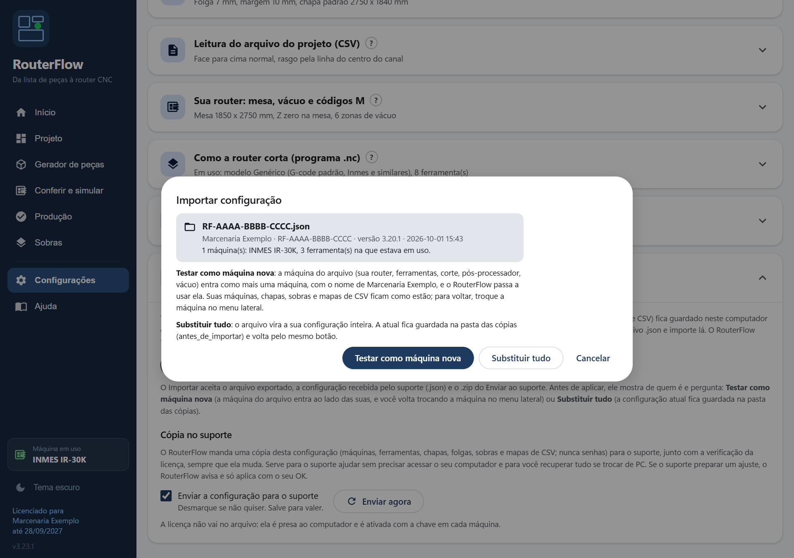
- Abrir a pasta das cópias automáticas: o RouterFlow guarda sozinho uma cópia por dia, das últimas 20 mudanças.
- Cópia no suporte: com a caixa "Enviar a configuração para o suporte" marcada (padrão), o RouterFlow manda uma cópia da configuração junto com a verificação da licença sempre que ela muda. Vai tudo o que o arquivo exportado tem, menos senhas e o estoque de sobras (que leva o nome dos projetos, ou seja, dos seus clientes). Serve para o suporte ajudar sem acessar o seu computador e para recuperar a configuração se você trocar de PC. "Enviar agora" manda na hora.
- Contadores de uso e erros: com a caixa "Enviar contadores de uso e erros do programa" marcada (padrão), o RouterFlow manda números de uso (aberturas, projetos, chapas, peças) e os erros do programa, sem nomes de arquivo, para melhorar o programa. Desmarque se não quiser: a confirmação da licença continua. Como os dados são tratados está na página Privacidade do site.
- Ajuste enviado pelo suporte: quando o suporte prepara uma configuração para o seu computador, o RouterFlow mostra um aviso com a data e o recado, e só aplica se você clicar em Aplicar. A configuração atual fica na cópia de segurança, e as senhas deste computador não mudam. "Agora não" deixa como está.
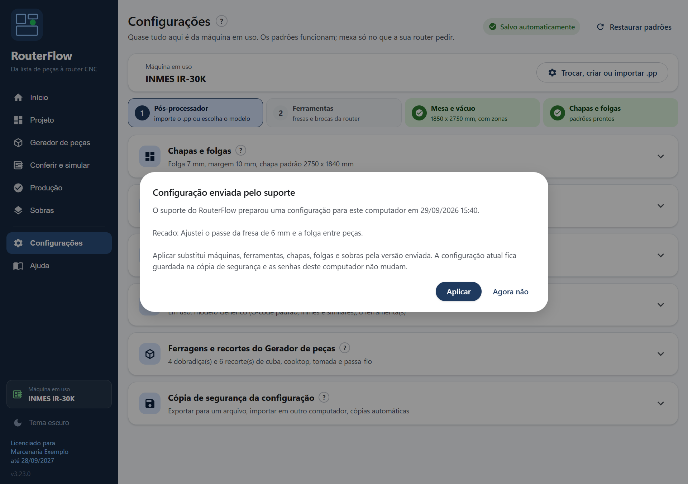
- A licença não vai no arquivo: ela é ativada com a chave em cada computador. Atualizar o RouterFlow nunca apaga a configuração.
Projeto: da lista de peças às chapas
Etapa 1: arquivos
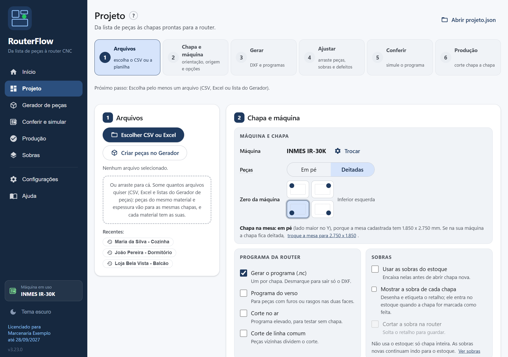
- Escolher CSV ou Excel abre a janela de arquivos. Depois do primeiro, o botão vira Adicionar arquivo: some quantos quiser, de pastas diferentes, e também arraste para a área tracejada. CSV, planilha do Excel e lista do Gerador de peças entram juntos no mesmo projeto: peças do mesmo material e da mesma espessura vão para as mesmas chapas, e cada material tem as suas chapas. O ID de cada peça leva o começo do nome do arquivo de onde ela veio. Só com Unir tudo numa chapa (Mais opções) os materiais se misturam. O X ao lado tira um arquivo da lista.
- Para a lista do Gerador cair nas mesmas chapas do CSV, use no Gerador o mesmo nome de material: com arquivos no Projeto, os materiais deles aparecem primeiro na lista do campo Material.
- O CSV do software de projeto (o mesmo do plano de corte) traz contorno, fitas, furos, rasgos, cliente e ambiente. O nome do cliente vira o nome do projeto, da pasta e dos arquivos.
- Lista simples: qualquer CSV com nome, comprimento, largura, espessura, quantidade, material e veio (do Excel, do Corte Certo, de outro programa). Sem furos e rasgos, porque a lista não os traz.
- Lista do Gerador de peças (.rfpecas): as peças que você montou no Gerador de peças. O botão Criar peças no Gerador, ao lado de Escolher CSV, leva para lá; na lista de arquivos, o botão Editar do arquivo .rfpecas reabre a lista no gerador. Ela pode entrar sozinha ou junto com o CSV do projeto, nas mesmas chapas.
- Planilha do Excel (.xlsx): a própria planilha, sem converter. O RouterFlow lê a primeira aba; a primeira linha com conteúdo é o cabeçalho. Se as colunas não forem reconhecidas, a janela Colunas pergunta qual é qual, como no CSV.
- Recentes reabre os últimos projetos com um clique (cada projeto aparece uma vez só). Abrir projeto.json (no alto, à direita) reabre qualquer projeto gerado antes, para ajustar ou regravar.
- Novo projeto (no alto, à direita, aparece quando já há arquivo escolhido ou projeto gerado) fecha o projeto atual e volta a tela ao começo. O projeto fechado continua no histórico, com os arquivos na pasta.
Se o RouterFlow não reconhecer as colunas de um arquivo, ele abre a janela de mapeamento. O botão Colunas ao lado de cada arquivo abre a mesma janela quando quiser conferir.
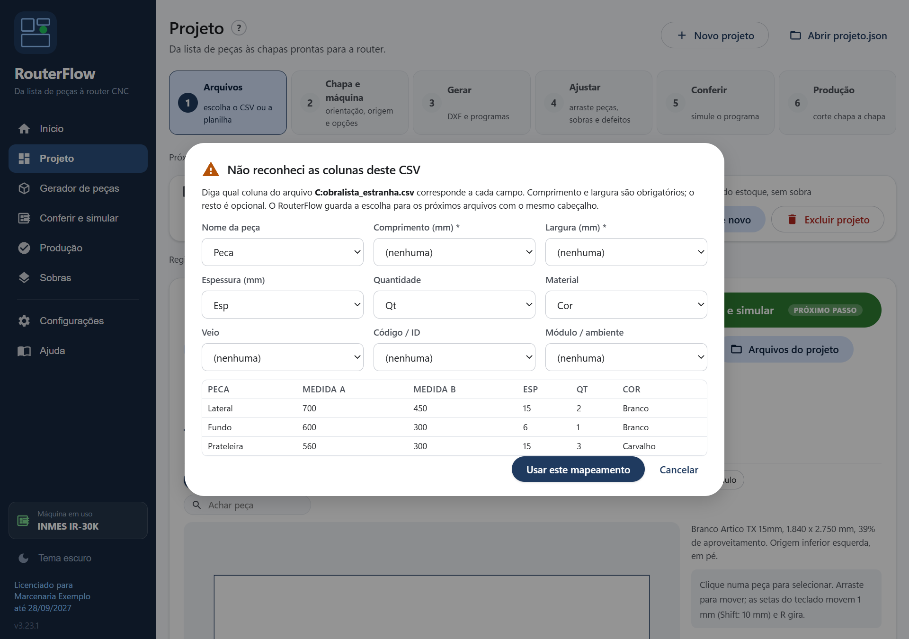
Diga qual coluna do arquivo é cada campo, olhando a amostra das primeiras linhas. Comprimento e largura são obrigatórios. A escolha fica guardada para os próximos arquivos com o mesmo cabeçalho.
Etapa 2: chapa e máquina
A etapa 2 tem três grupos, cada um com o seu título, e um "Mais opções" recolhido embaixo com o que quase nunca muda.
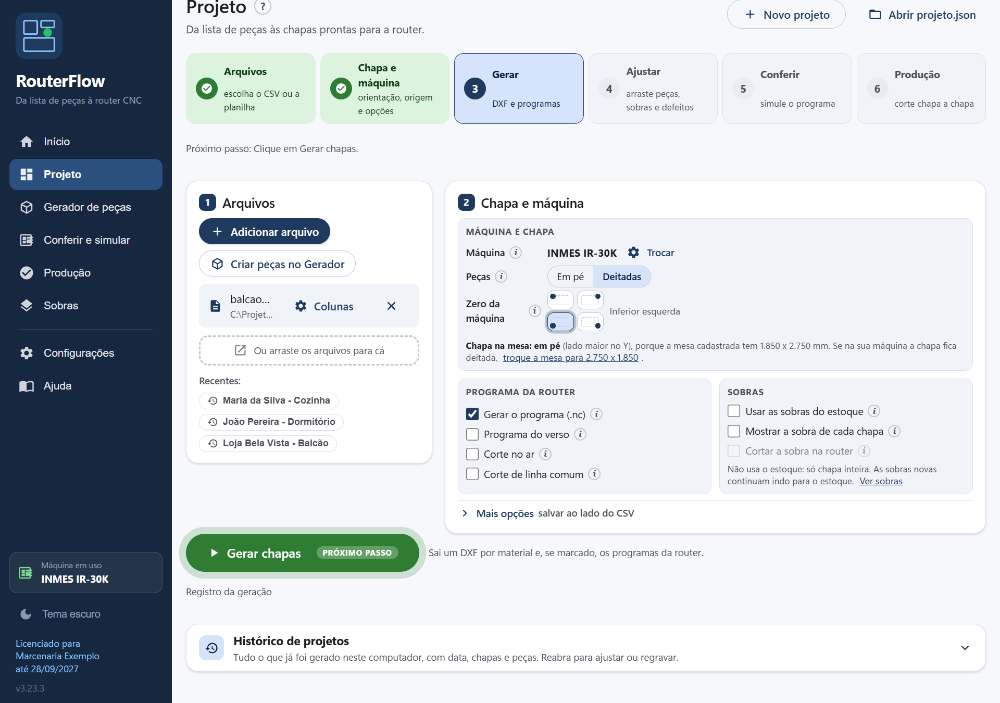
Para a tela ficar compacta, a explicação de cada opção fica no ícone i ao lado do nome. Pare o mouse em cima e abre o mesmo balão do ? das Configurações: o que a opção faz, quando usar e o botão Ver no manual, com imagens. Clicando no i, o balão fica aberto até você clicar fora ou apertar Esc; o clique no i não marca nem desmarca a caixa.
Máquina e chapa
- Máquina: a que vai cortar este projeto. Trocar abre a janela de máquinas.
- Peças: Em pé (lado maior das peças no Y da máquina) ou Deitadas (no X). Parando o mouse sobre a palavra "Peças" aparece a explicação completa. Vale para as peças sem veio; peça com veio segue o veio da chapa. O encaixe enche uma faixa ao longo do lado comprido da chapa antes de alargar, e a sobra fica uma tira inteira; uma peça sem veio gira 90 graus quando é assim que ela cabe no fim da fileira. A orientação pedida só vale enquanto não custa chapa nem espaço.
- Zero da máquina: o canto da chapa onde fica o zero. Os quatro botões desenham o canto; o texto ao lado confirma. O encaixe começa por esse canto e os eixos aparecem no editor.
- Embaixo, uma linha diz como a chapa entra na mesa (em pé ou deitada, pela área útil cadastrada), avisa se ela não cabe e oferece trocar X por Y da mesa quando a máquina foi cadastrada ao contrário.
Programa da router e Sobras
| Caixa | Marcada | Desmarcada |
|---|---|---|
| Gerar o programa (.nc) | Sai um .nc por chapa, além do DXF | Só DXF, para quem usa o Aspire |
| Programa do verso | Quando uma peça tem furos ou rasgos nas duas faces, sai um segundo programa para rodar com a chapa virada. Peça com usinagem só na face de trás não precisa disso: ela entra virada na chapa sozinha e a usinagem sai por cima no programa normal | A usinagem da face de trás das peças com as duas faces fica de fora, com aviso no projeto |
| Corte no ar | Programa elevado para conferir o percurso sem chapa. Nunca fica marcado sozinho | Corte normal |
| Corte de linha comum | Peças vizinhas coladas a exatamente um diâmetro de fresa dividem a aresta: a segunda pula o trecho. Menos tempo e menos pó. Só funciona com a folga entre peças (Chapas e folgas) igual ao diâmetro da fresa do contorno; se não for, o resultado avisa | Cada peça com o seu contorno inteiro |
| Usar as sobras do estoque | O nesting encaixa nas sobras disponíveis antes de abrir chapa inteira | Só chapa inteira, sem reservar sobra. As sobras novas continuam indo para o estoque |
| Mostrar a sobra de cada chapa | Desenha a sobra no editor e no mapa, imprime a etiqueta dela e permite cortar | O projeto não calcula, não mostra nem etiqueta sobra |
| Cortar a sobra na router | A router solta cada retalho da chapa (até três), alinhado, e sai etiqueta. Ele entra no estoque quando a chapa for marcada como feita na Produção. O corte passa no meio da folga entre as peças e o retalho, nunca a menos de 0,3 mm da peça além do raio da fresa; do lado em que o retalho encosta na margem, o corte vai até a borda da chapa para soltar de verdade. É o último corte do programa completo e vai junto no programa só de contornos. Só dá para marcar com "Mostrar a sobra" marcada | O retalho fica na chapa |
No grupo Sobras, a linha de baixo mostra quantas sobras há no estoque, e Ver sobras abre a tela Sobras.
Mais opções (clique para abrir; a linha já diz o que está escolhido)
- Unir tudo numa chapa só: todas as peças juntas, sem separar por material. Desmarcado, sai uma chapa por material e espessura (o normal).
- Salvar em: ao lado do CSV (padrão) ou numa pasta fixa. Quando uma dessas duas está diferente do normal, o Mais opções já abre sozinho.
O RouterFlow lembra as últimas escolhas para o próximo projeto, menos "Corte no ar".
Etapa 3: gerar chapas
Com pelo menos um arquivo escolhido, o botão Gerar chapas fica ativo e marcado como próximo passo. Ao clicar, o registro da geração mostra o que está acontecendo: leitura dos arquivos, nesting por material (doze estratégias, fica a melhor), gravação dos arquivos.
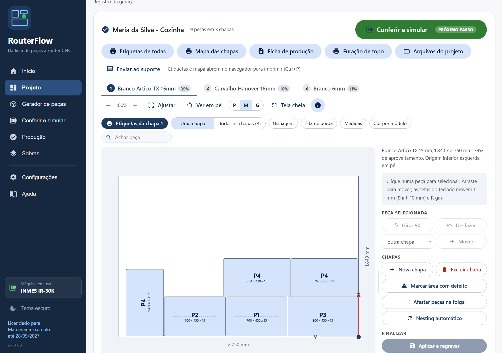
Assim que as chapas saem, as etapas 1 e 2 se recolhem numa linha de resumo: os arquivos, a máquina, a orientação das peças, a origem e as opções marcadas. Para trocar qualquer coisa (outro arquivo, outra máquina, ligar o verso, mudar a origem), clique em Editar e gerar de novo: as duas etapas abrem outra vez e o botão Gerar chapas regrava os arquivos do projeto na mesma pasta. Nada do que foi gerado antes se perde: o projeto.json guarda tudo.
Na mesma linha, Excluir projeto apaga o que foi gerado: a pasta com os DXF, os programas, as etiquetas, o mapa e a ficha vai para a Lixeira do Windows (dá para restaurar de lá), o projeto sai do histórico, as sobras que ele guardaria saem do estoque e as que ele reservou voltam a ficar livres. O CSV ou a planilha que você importou não é apagado. Use quando importou o arquivo errado ou quer refazer do zero. Por segurança, se o projeto foi salvo numa pasta escolhida em "Salvar em", o RouterFlow não apaga nada e pede para você apagar à mão.
Os arquivos DXF e os programas .nc não aparecem listados na tela: uma linha diz quantos foram gravados e em que pasta. Os programas ficam em Conferir e simular e na Produção (pendrive e chapa feita); o DXF é para quem usa outro programa de CAM e está na pasta do projeto.
O que sai na pasta do projeto, ao lado da lista de peças, com o nome do cliente e do ambiente: Maria da Silva - Cozinha (RouterFlow). Sem cliente no arquivo, a pasta leva o nome do arquivo.
| Pasta ou arquivo | O que tem |
|---|---|
| Programas da router | Um programa .nc por chapa, por exemplo Maria_da_Silva_Branco_15mm_chapa1_COMPLETO.nc. O fim do nome diz o que ele faz: _COMPLETO, _SO_FUROS, _SO_RASGOS ou _SO_CONTORNOS, e _VERSO_ antes quando é da chapa virada |
| Desenhos DXF | Todas as chapas de cada material num DXF só (layers CONTORNO, FURO_D5_P12, RASGO_L6_P6, TEXTO e CHAPA, na orientação e origem da mesa), e o _VERSO.dxf com a usinagem da face de trás, quando existe. Para quem usa outro programa de CAM |
| Para imprimir | Etiquetas, Mapa das chapas, Ficha de produção e, quando alguma peça tem furo na borda, Furação de topo. Cada um sai duas vezes: o .html abre no navegador para imprimir com Ctrl+P, e o .pdf é para levar a outro computador, mesmo antigo, e imprimir de qualquer leitor de PDF. O PDF sai igual ao impresso, na mesma medida de papel (a etiqueta de 100 x 60 mm vira uma página de 100 x 60 mm), e fica pronto alguns segundos depois das chapas: o registro da geração avisa. As etiquetas por chapa também ganham o PDF |
| Listas | Lista de peças, Fita de borda e Ferragens, planilhas para o Excel ou para o seu sistema |
| Relatório.txt | Resumo em texto da geração, com os avisos |
| projeto.json e producao.json | O projeto e as chapas marcadas como feitas. São do RouterFlow: não mexa nem apague |
Os nomes dos programas e dos DXF ficam sem acento e sem espaço porque vão para pendrive, rede e controladora. Projetos gravados até a versão 3.21 (pastas aspire e router) continuam abrindo; ao gerar de novo, os arquivos passam para as pastas novas.
#### Arquivos do projeto: onde está cada coisa
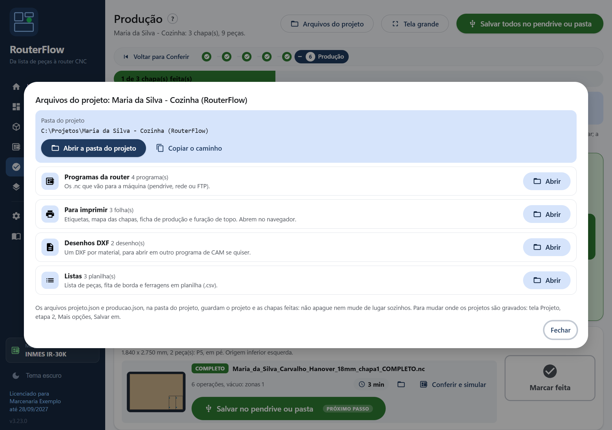
O botão Arquivos do projeto fica no resultado do Projeto, no alto de Conferir e simular e da Produção, e no ícone de pasta de cada projeto do histórico. Ele mostra o caminho completo da pasta do projeto (com Copiar o caminho, para colar no Explorador ou mandar para alguém) e as quatro pastas de dentro, cada uma com quantos arquivos tem e o botão Abrir. Pasta que ainda não foi gerada (o projeto sem programas, por exemplo) aparece apagada.
Atalhos para o arquivo certo: na lista de programas de Conferir e simular, Abrir a pasta dos .nc abre direto Programas da router; ao lado do nome do programa aberto, o ícone de pasta abre o Explorador com o arquivo já selecionado; na Produção, cada programa tem o mesmo ícone. Se a pasta foi movida ou apagada, o RouterFlow avisa; gere de novo para recriar.
Etapa 4: ajustar no editor de chapas
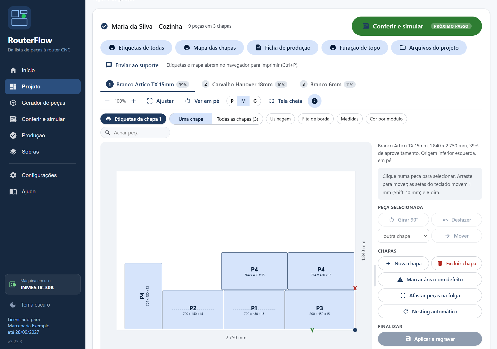
No alto: o nome do projeto, quantas peças em quantas chapas, e o botão Conferir e simular (próximo passo): abre no simulador o programa da chapa que está na tela; se você mexeu no encaixe ele regrava antes, e se os programas não foram gerados ele gera. Logo abaixo, Etiquetas de todas, Mapa das chapas, Ficha de produção, Furação de topo (quando alguma peça tem furo na borda), Arquivos do projeto (veja abaixo) e Enviar ao suporte (veja abaixo). No fim do cartão ficam as sobras de cada chapa (quando marcadas) e os avisos do projeto.
Uma aba por chapa, com o número da chapa no projeto (1, 2, 3, na ordem das abas, do mapa e da Produção), o material e o aproveitamento. Quando um material tem mais de uma chapa, a aba diz também qual é dele ("2 de 3"). O mesmo número sai na etiqueta ("Chapa 2 de 3"), no mapa das chapas, em Conferir e simular e na Produção: num projeto com três materiais, as chapas são 1, 2 e 3, e não três "chapa 1". O nome dos arquivos .nc e .dxf continua com o material e o número dentro dele.
Logo abaixo das abas, o botão azul Etiquetas da chapa abre só as etiquetas das peças da chapa que está na tela (e a da sobra dela, quando vai ser guardada), para imprimir a chapa que vai cortar. O arquivo fica em Para imprimir, Etiquetas por chapa, com o número da chapa no nome. Se você mexeu nas chapas e ainda não regravou, o RouterFlow pede para aplicar antes, para a etiqueta sair com o número do mapa certo. Em Todas as chapas, cada chapa tem o seu botão. O botão azul claro Etiquetas de todas, no alto, imprime o projeto inteiro.
A barra acima do desenho:
- - 100% + zoom; Ajustar enquadra a chapa; a chapa aparece deitada na tela (lado comprido na horizontal), que é como ela cabe melhor no monitor; Ver em pé levanta o desenho e Ver deitada volta. Só muda o jeito de ver: a chapa, as peças e o programa não mudam, e dá para arrastar as peças do mesmo jeito; P, M, G mudam a altura da área do desenho; Tela cheia usa o monitor inteiro (Esc volta); o botão i mostra ou esconde as dicas.
- Roda do mouse: zoom no ponto. Arraste o fundo: move a chapa. Duplo clique no fundo ou tecla 0: ajusta. A barra fina abaixo do desenho estica a altura à vontade, e a barra entre o desenho e o painel da direita muda a largura dos dois; duplo clique numa delas volta ao normal. O tamanho fica lembrado.
Logo abaixo, o que aparece no desenho. Usinagem, Fita de borda, Medidas e Cor por módulo começam desligados; clique para ligar, e a escolha fica lembrada:
| Botão | O que mostra |
|---|---|
| Uma chapa e Todas as chapas | Todas as chapas mostra as chapas do projeto lado a lado, pequenas, com quantas peças e o aproveitamento de cada uma, e quantas têm peça com problema. Clique numa para editar |
| Usinagem | Furos (círculos azuis), rasgos e canais (faixas laranja) e recortes (vermelho) dentro de cada peça, no lugar certo. Tracejado é usinagem da face de trás |
| Fita de borda | Um traço marrom fino, por dentro de cada borda que leva fita |
| Medidas | Da peça selecionada até a vizinha ou a borda da chapa, nos quatro lados. Aparece também enquanto você arrasta, para soltar na medida certa |
| Cor por módulo | Cada módulo de uma cor, com a legenda no painel: ajuda a ver o que vai junto na montagem |
| Achar peça | Digite o nome, o ID ou o módulo: as peças achadas ficam com a borda amarela e o contador diz em quantas chapas estão. Enter vai para a próxima, mesmo em outra chapa |
Passe o mouse sobre uma peça para ver o nome, o módulo, as medidas, a fita e quantos furos e rasgos ela tem.
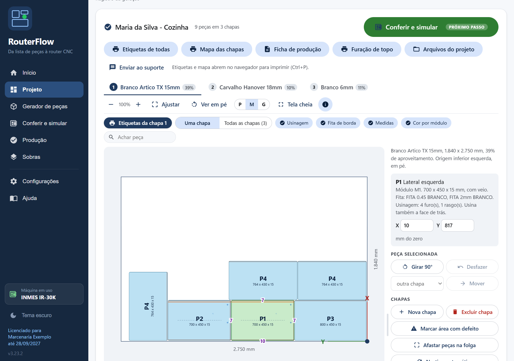
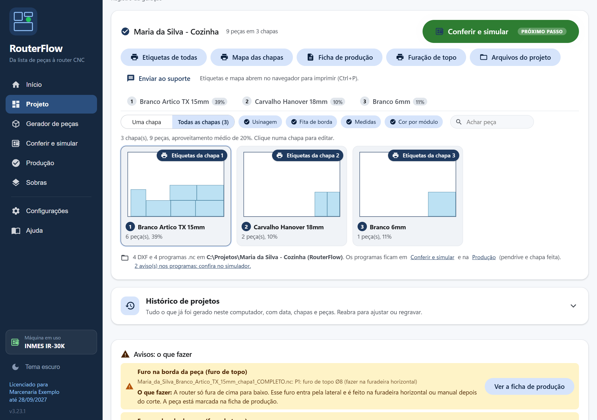
O painel da direita:
| Grupo | Botão | O que faz |
|---|---|---|
| Peça selecionada | (no alto) | Nome, módulo, medidas, fita e usinagem da peça, e os campos X e Y: a distância do zero da máquina até o canto da peça mais perto dele, como no programa. Digite um valor para pôr a peça no lugar exato |
| Girar 90° | Gira a peça selecionada (tecla R). Peça com veio avisa se o veio vai sair errado. A usinagem desenhada some até regravar | |
| Tirar a peça | Tira a peça selecionada do projeto (tecla Delete): ela não é cortada e não entra nos programas nem nas etiquetas. Aparece na lista Peças tiradas, embaixo dos botões, com Devolver (volta para a chapa aberta num lugar livre; de outro material, entra numa chapa nova ao aplicar). Desfazer (Ctrl+Z) também traz de volta. Vale depois de Aplicar e regravar, e continua valendo ao reabrir o projeto | |
| Desfazer | Volta o último movimento | |
| outra chapa e Mover | Leva a peça para a chapa escolhida na lista | |
| Chapas | Nova chapa | Abre uma chapa vazia do mesmo material |
| Excluir chapa | Remove a chapa (só vazia) | |
| Marcar área com defeito | Cria um retângulo vermelho (nó, lasca, borda batida); arraste até o lugar e ajuste o tamanho. Nenhuma peça entra ali | |
| Afastar peças na folga | Empurra as peças mais perto que a folga até a folga certa, sem sair da chapa | |
| Nesting automático | Refaz o encaixe de todas as chapas, desviando das áreas com defeito. Descarta as alterações à mão | |
| Aplicar e regravar | Regrava DXF, programas, mapa, etiquetas e ficha com as alterações. Fica como próximo passo quando você mexeu | |
| Peças nesta chapa | Lista as peças da chapa; clique numa para selecionar |
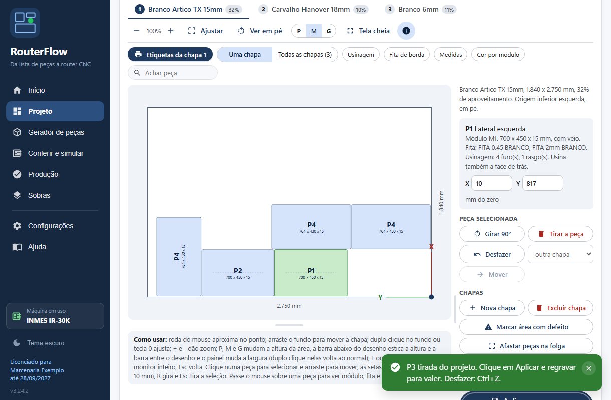
Arrastar uma peça: clique nela e arraste. Ao soltar perto de outra, o encaixe mantém a folga sozinho. Com a peça selecionada, as setas do teclado andam 1 mm (com Shift, 10 mm) para o lado que apontam na tela, R gira e Esc tira a seleção. Peças sobrepostas ficam vermelhas e não deixam regravar; peças mais perto que a folga ficam laranja e são afastadas sozinhas ao regravar.
Encaixe pela forma. Peça irregular (tampo em L, topo em arco, letra, pé do banco) não ocupa o retângulo inteiro: o encaixe usa as faixas do contorno dela, e peças menores entram no canto vazio do L. No editor ela aparece com o contorno de verdade (o retângulo fica tracejado, só como referência) e "Afastar peças na folga" respeita a forma. Girar a peça no editor volta a ocupar o retângulo; o Nesting automático refaz pela forma.
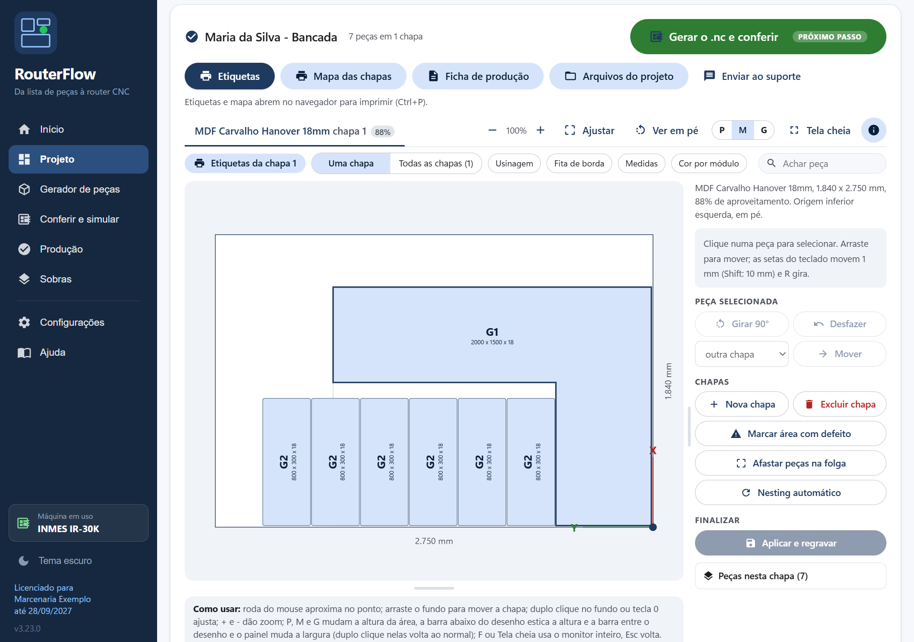
Quando "Mostrar a sobra" está marcado, os retalhos que valem a pena (até três por chapa) aparecem tracejados em verde, com três escolhas no painel: Cortar e guardar (etiqueta, e entra no estoque quando a chapa for marcada como feita), Cortar e descartar (só corta) ou Deixar na chapa.
Enviar ao suporte
Alguma coisa saiu diferente do esperado? Enviar ao suporte manda este projeto para o Consultor RouterFlow, que abre do mesmo jeito que você vê. Antes de enviar, o RouterFlow mostra a lista do que vai: a lista de peças que você importou, o projeto.json, o relatório, os programas .nc e a configuração da máquina (sem senhas), e o tamanho. Escreva o que aconteceu no campo do recado (opcional) e clique em Enviar. Nada vai sem você clicar.
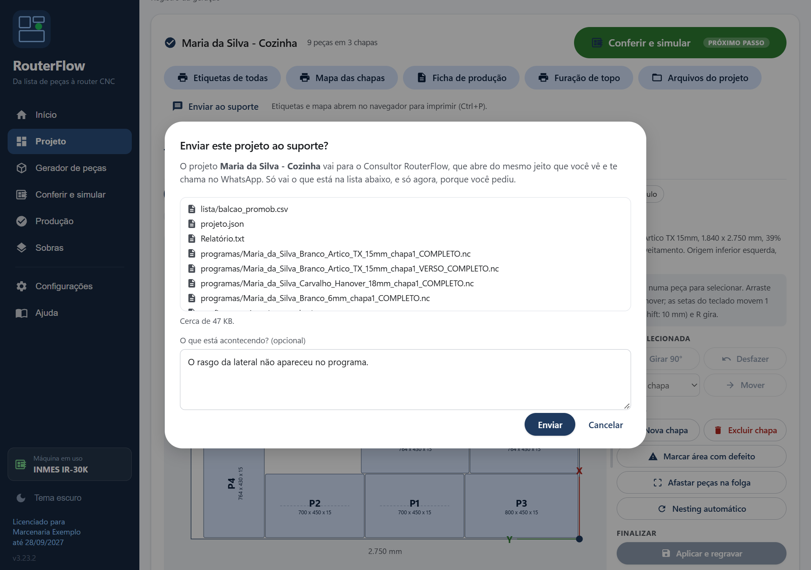
Meus projetos
Tudo o que você faz no RouterFlow fica num lugar só, com o nome do cliente: os projetos gerados no Projeto (vindos do Promob ou de outro CSV, de planilha, do Gerador ou do Montador) e as listas e ambientes do Gerador e do Montador que ainda não viraram chapas. Fica no menu, logo abaixo de Início; o botão Meus projetos do Gerador leva para lá, e o Projeto mostra os 5 mais recentes em Projetos recentes.
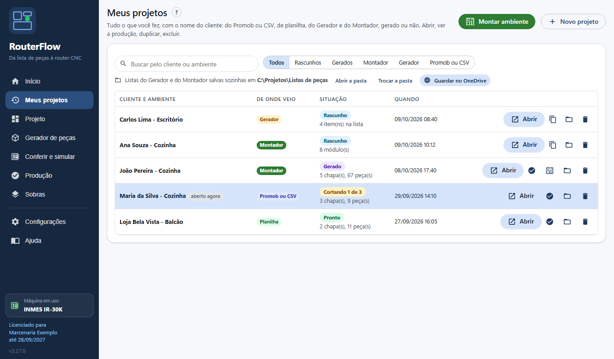
- De onde veio: Promob ou CSV, Planilha, Gerador ou Montador.
- Situação: o projeto é um só, do rascunho até o corte, e a situação diz em que ponto ele está: Rascunho (a lista ou o ambiente ainda não foi para as chapas), Gerado (chapas e programas prontos para cortar), Cortando 2 de 5 (na Produção) e Pronto (tudo cortado). Embaixo, as chapas e as peças, ou os módulos e os itens da lista.
- Abrir: o projeto gerado reabre no Projeto (o botão do lado abre direto na Produção); a lista ou o ambiente reabre no Gerador, como estava, até o Montador no meio da edição. Clicar na linha também abre.
- Duplicar a lista para um cliente parecido, Mostrar na pasta, e Excluir: o projeto gerado manda a pasta dele para a Lixeira do Windows; a lista vai para a Lixeira também. Nada some sem passar pela Lixeira.
- A busca acha pelo cliente ou pelo ambiente, e os filtros separam Rascunhos, Gerados, Montador, Gerador e Promob ou CSV.
Salvo sozinho: no Gerador e no Montador não precisa salvar. Poucos segundos depois de cada mudança o projeto é gravado com o nome do cliente e do ambiente (o que começou sem cliente ganha o nome quando ele é digitado); a Lista de peças mostra "Salvo às 10:12".
Na nuvem: as listas ficam em Documentos, RouterFlow, Listas de peças. Se o computador tem OneDrive, Google Drive ou Dropbox, aparece o botão Guardar no OneDrive (ou no Drive, no Dropbox): as listas passam para lá e ficam também nos outros computadores da marcenaria e a salvo se este quebrar. Trocar a pasta escolhe qualquer outra, até uma pasta de rede. As listas que já existem são copiadas junto. A nuvem é a sua: os projetos não passam pelo RouterFlow.
Histórico e avisos
Abaixo do resultado, "Histórico de projetos" lista tudo o que já foi gerado neste computador, com data, chapas e peças. Clique em qualquer lugar da linha (ou em Reabrir) para abrir o projeto e ajustar ou regravar; o botão da pasta e o x da linha continuam fazendo o deles.
Por último vêm os avisos do projeto, quando existem: cada um explica o que aconteceu, o que fazer e tem um botão que leva ao lugar certo (uma configuração, o editor ou a ficha).
Gerador de peças
Para a peça que não veio do software de projeto: a porta avulsa, a gaveta que faltou, o tampo com a cuba, o painel ripado da TV, o nicho, a colmeia da adega. Você escolhe o modelo, digita as medidas e a peça sai pronta para a router, com contorno, furos, rasgos, recortes e canais, sem desenhar e sem Aspire. Depois segue o caminho de sempre: chapas, Conferir e simular, etiquetas e Produção.
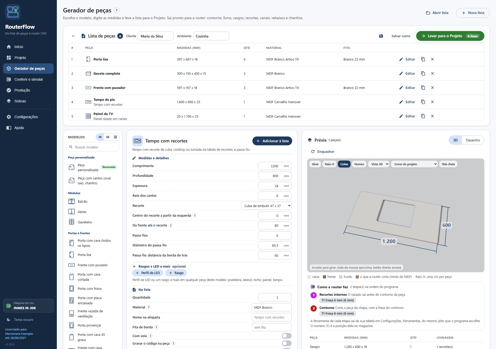
A Lista de peças fica no alto da tela, numa linha com o cliente, o ambiente, o botão de salvar, Salvar como e Levar para o Projeto sempre à vista (parando o mouse no título aparece onde a lista é guardada). A setinha à esquerda do título recolhe a lista numa linha só, para sobrar tela para o desenho; clique de novo para abrir. Embaixo dela vêm os modelos, as medidas e a prévia.
Os modelos do seu jeito: lista, recolhido ou galeria
Os três botões no alto dos modelos trocam o jeito de ver o catálogo, e o RouterFlow lembra a escolha:
- Lista: a coluna da esquerda com o nome de cada modelo, em grupos.
- Recolhido: só os ícones dos grupos, numa coluna estreita. Passe o mouse (ou clique) num ícone e o grupo abre por cima da tela; a lupa abre a busca. O desenho e a prévia ganham a largura toda, bom para notebook.
- Galeria: cartões grandes com o desenho, o nome e a descrição de cada modelo, no lugar da tela. Clique num cartão para abrir o modelo; a galeria fecha. Outro modelo, no alto do formulário, abre a galeria de novo. Na primeira vez que você entra no Gerador, ele abre assim.
Nos três jeitos: a estrela ao lado do modelo guarda nos Favoritos, que ficam no topo, e logo abaixo vêm os Usados por último (os 3 últimos). O selo verde Novo marca os modelos que chegaram nas últimas versões (e Renovado, os que ganharam recursos). Arrastar um modelo (da lista, do grupo aberto ou da galeria) até a Lista de peças põe o item na lista na hora, com as medidas padrão.
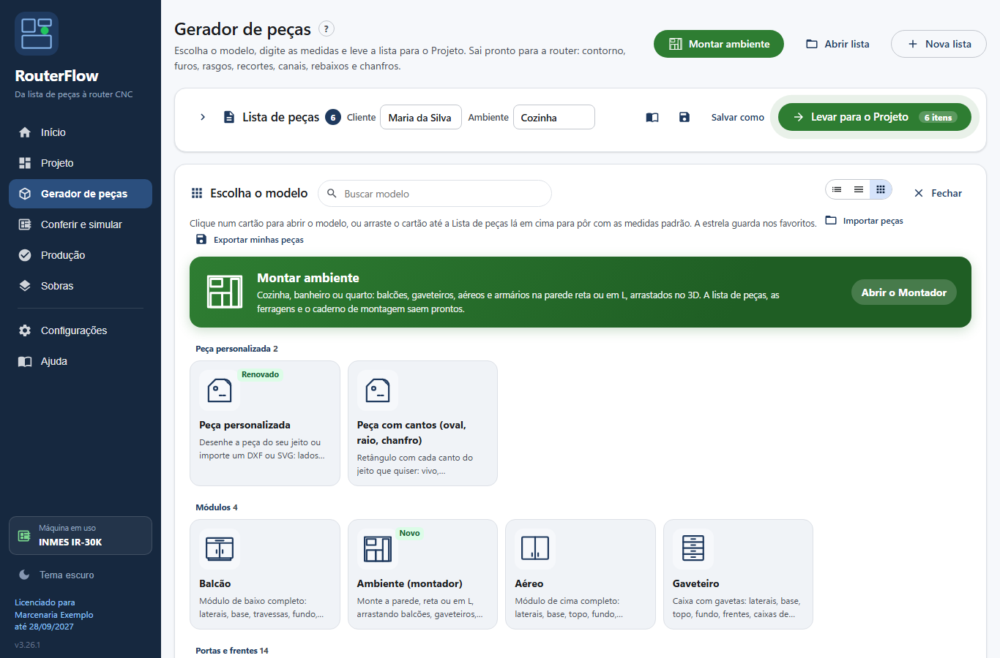
Escolher o modelo e digitar as medidas
- Escolha o modelo (na lista, no grupo aberto do recolhido ou num cartão da galeria). Eles estão em grupos: peça personalizada, módulos, portas e frentes, gavetas, caixaria, tampos, curvos e pés, painéis, nichos e divisórias, encaixes, gabaritos. A caixa dos modelos rola sozinha. Para achar mais rápido, digite em Buscar modelo, no alto da caixa: "cava", "gaveta", "balcao" ou "ripado" (acento não importa) deixa só os modelos que têm a palavra no nome ou na descrição, com a palavra destacada. Enter escolhe o primeiro da lista e Esc (ou o x) mostra todos de novo.
- No meio, digite as medidas. Cada campo é uma linha: o nome à esquerda, o valor à direita, com a unidade dentro do campo; as opções de ligar e desligar são chaves. Quando um campo tem explicação, o ícone i ao lado do nome abre o balão com ela, como na etapa 2 do Projeto. O formulário tem três partes: Medidas e detalhes (as do modelo), Rasgos e LED a mais (veja abaixo) e Na lista. A prévia à direita redesenha a cada número (em 3D ou no desenho, veja a Prévia 3D abaixo). No desenho, as peças aparecem em escala e com as cotas: furos em azul, rasgos em laranja, recortes internos em roxo, canais em laranja claro, rebaixos em lilás e o chanfro 45 em marrom. Enquanto você mexe no mesmo modelo, a escala fica presa: aumentar a largura faz a peça crescer na tela, diminuir faz encolher. Ao trocar de modelo, o desenho se ajusta de novo ao quadro. A tabela embaixo da prévia diz quantas peças saem, a usinagem de cada uma e, quando serve, uma nota (a medida do vidro, por exemplo).
- Campos que só valem para uma escolha aparecem quando ela é feita: as medidas do recorte à mão só aparecem com "Medidas à mão", a quantidade de dobradiças some com "Sem dobradiça".
- Em Rasgos e LED a mais, opcional, Perfil de LED põe o rebaixo do perfil (12 x 8 mm, a 30 mm da borda) com o furo do fio, e Rasgo põe um rasgo reto (6 x 8 mm), em qualquer modelo: prateleira, lateral, nicho, painel, tampo, porta. Para cada um: em qual peça (quando o modelo tem várias), de qual borda medir (de cima, de baixo, da esquerda ou da direita, como no desenho da prévia: o rasgo corre paralelo a essa borda), a distância da borda, a largura, a profundidade e quanto parar antes das pontas (0 vai de ponta a ponta). No LED, o furo do fio fica numa das pontas, 20 mm para dentro. Dá para pôr quantos quiser; o x tira. Eles saem na prévia, na lista, no programa da router, no simulador e na contagem de usinagem da etiqueta.
- Em Na lista, diga a quantidade, o material (o mesmo nome que você usa nas chapas; a espessura entra sozinha), o nome que vai na etiqueta, a fita de borda, se a peça tem veio e se a router deve gravar o código da peça (G1, G2...) de leve, perto do canto. Sem margem da chapa deixa a peça encostar na borda da chapa (margem 0 em vez da margem de Configurações, Chapas e folgas), para aproveitar a borda de fábrica numa ripa ou num tampo comprido. As outras peças continuam com a margem. Na borda, a fresa passa meio diâmetro para fora da chapa: confira se a sua mesa e o zero da máquina deixam.
- Clique em Adicionar à lista: o botão fica no alto do formulário, ao lado do nome do modelo, e se repete no fim. O item aparece na lista, no alto. Quando ela estiver pronta, Levar para o Projeto mostra quantos itens ela tem e leva tudo para a etapa 1 do Projeto.
Quando a medida não fecha (recorte maior que o tampo, caneco fundo demais para a espessura, canal mais fundo que metade da chapa), aparece um aviso amarelo embaixo da prévia. A peça ainda pode entrar na lista, mas confira antes de cortar. O programa não escolhe tamanho por você: toda medida em mm vai até a maior medida de chapa cadastrada em Configurações (a chapa padrão e as chapas por material; com a chapa de 2750 x 1840, até 2750 mm). Só acima disso aparece um aviso dizendo que a medida passou do tamanho da chapa. Quantidades (dobradiças, prateleiras, cambotas) mantêm o limite do modelo.
Minhas peças: o seu catálogo
Qualquer peça do Gerador pode virar um modelo seu. Ajuste as medidas (ou desenhe na Peça personalizada), escolha o material e a fita e clique em Guardar como minha peça, no fim do formulário. Dê um nome e um grupo (por exemplo "Cozinhas" ou "Placas"): a peça aparece no catálogo, no alto, logo depois dos Usados por último, dentro desse grupo. Ao abrir, ela vem com as medidas, o desenho, o material e a fita guardados; mude o que quiser para o projeto da vez.
- Atualizar minha peça grava as medidas de agora em cima da peça aberta. Excluir minha peça tira do catálogo (as listas que já usam a peça continuam iguais).
- Na Peça personalizada, Medida nova: usinagens presas na borda (na barra do desenho) faz cada usinagem perto da borda manter a mesma distância dela quando você muda a largura ou o comprimento, e as do meio acompanharem o meio. Assim a sua placa com furos de fixação a 20 mm da borda serve em qualquer tamanho. Estica tudo é o jeito de antes.
- Exportar grava as suas peças num arquivo .rfmodelos, para levar a outro computador da marcenaria; Importar traz de volta (a mesma peça importada de novo substitui a anterior). Os botões ficam no fim da lista de modelos e no alto da galeria.
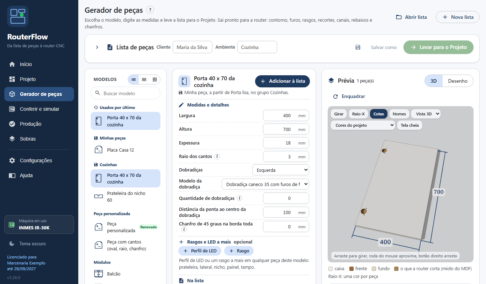
Peça com cantos: oval, arredondado ou chanfrado
O segundo modelo da lista, Peça com cantos (oval, raio, chanfro), é um retângulo em que cada um dos quatro cantos tem o tipo dele, sem precisar desenhar: Vivo, Arredondado (com o raio), Chanfrado (com o tamanho) ou Oval, com uma medida na largura (X) e outra na altura (Y), contadas a partir do canto. O oval pode ir até o fim do lado: 270 na largura de uma peça de 400 e 300 na altura dá aquela curva larga e baixa no alto da peça. Os cantos podem ser diferentes entre si (oval em um, raio em outro, chanfro no terceiro). Para furar, rasgar ou mudar o formato, use a Peça personalizada, que tem os mesmos cantos e mais o desenho livre.
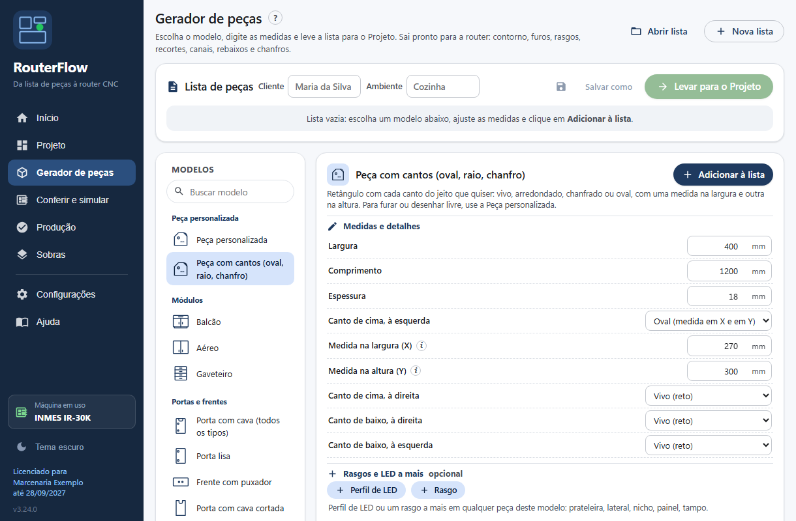
Peça personalizada: desenhe do seu jeito
Quando nenhum modelo serve, a Peça personalizada (primeiro item da lista de modelos) abre um editor de desenho no lugar das medidas. O desenho fica à esquerda e a prévia 3D fica ao lado, à direita, acompanhando cada mudança. Dá para fazer uma placa de casa, um painel com logo, uma peça com furação em série e canal de LED, sem outro programa.
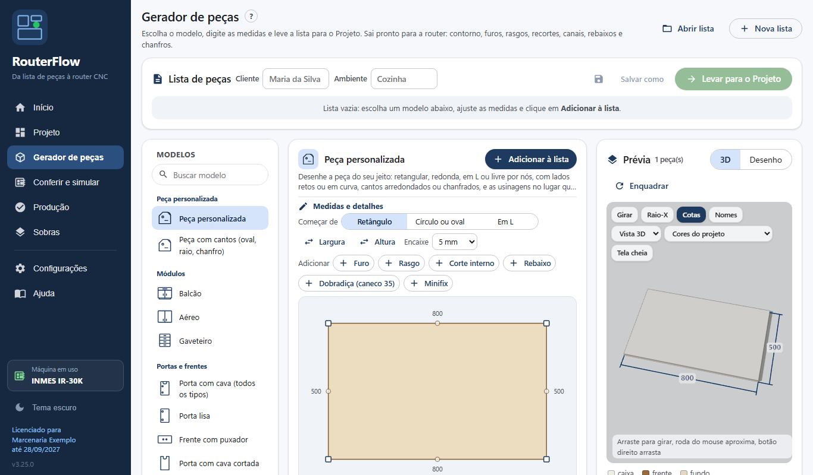
- Forma (o botão com o nome da forma): começar de retângulo, círculo ou oval, em L, em U ou hexágono, do tamanho de Largura e Comprimento. Mudar esses dois campos depois estica o desenho e as usinagens junto.
- DXF ou SVG (no mesmo menu Forma): usa o contorno de um arquivo desenhado em outro programa. O maior desenho fechado vira a peça (com os nós para mexer) e os desenhos fechados de dentro viram cortes internos. O DXF vem em milímetros; no SVG o tamanho pode vir diferente: confira a largura e o comprimento e, se precisar, digite a medida certa que o desenho estica junto.
- Desfazer e Refazer (as setas no alto, ou Ctrl+Z e Ctrl+Y com o desenho selecionado) voltam e avançam qualquer mudança.
- Nós (os quadradinhos): arraste para mudar a forma. Os pontos andam no Encaixe escolhido (0,5, 1, 5 ou 10 mm) e encostam nas guias: o meio e as bordas da peça, os outros nós e as outras usinagens, com uma linha verde mostrando onde encostou. Segure Alt para soltar.
- Medidas azuis: clique no comprimento de um lado (ou, com uma usinagem selecionada, na distância dela até a borda) e digite o valor; Enter aplica. No lado, o nó do fim anda na mesma direção. Clique no nó para digitar X e Y e escolher o canto: vivo, arredondado (com o raio), chanfrado ou oval. No oval a curva tem uma medida em cada lado: Curva na largura (X) e Curva na altura (Y), contadas a partir do canto, e pode ir até o fim do lado. Um retângulo de 400 x 1200 com o canto de cima oval de 270 na largura e 300 na altura dá uma curva larga e baixa, que sai reta nos dois lados, sem quina.
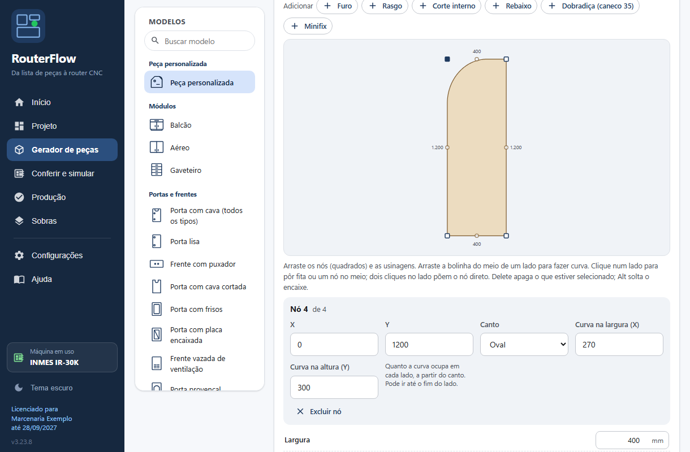
- Lados: a bolinha no meio de cada lado vira curva quando arrastada para fora ou para dentro. Clique no lado para digitar a curva, marcar Fita neste lado, escolher a Borda deste lado ou pôr um nó no meio; dois cliques no lado põem o nó direto. Lado com fita aparece em verde. Sem nenhum lado marcado, a fita do item vai em todos.
- Borda deste lado: reta, chanfro em V (45 graus, com o tamanho, feito pela fresa V depois do contorno) ou arredondada (com o raio, pela fresa de arredondar cadastrada em Configurações, Ferramentas). O lado com borda aparece tracejado: azul no chanfro, rosa na arredondada. Esta borda em todos os lados copia para a volta inteira.
- Adicionar: à vista ficam furo, rasgo, canal livre, corte interno (vazado, retângulo com cantos arredondados ou círculo), texto e logo ou imagem; em Mais estão a furação em série, o rebaixo, a dobradiça (caneco de 35 com a fixação da tabela de ferragens, encostada na borda que você escolher) e minifix. Arraste para posicionar. Selecionada, a usinagem mostra as cotas até as bordas da peça e o painel com as medidas, a profundidade e os botões Centralizar, Copiar espelhado (a mesma distância do outro lado), Duplicar e Excluir. Rasgo, corte e rebaixo retangulares têm o Giro.
- Furação em série: furos de 5 mm a 37 mm da borda, de 32 em 32, do pé até em cima (a linha 32). Mude o diâmetro, a profundidade, a quantidade e o passo no painel.
- Canal livre: depois do botão, clique os pontos do caminho no desenho; dois cliques ou Enter terminam, Esc cancela. No painel: a largura, a profundidade e a fresa (reta, com passadas lado a lado, V ou ponta redonda). Desenhar de novo refaz o caminho. Serve para LED em curva, friso decorativo, encaixe.
- Texto: escreva o texto, a altura da letra, o giro e como gravar: em V com uma fonte do Windows (a fresa V sobe e desce acompanhando a letra) ou em traço (linha única, com a menor fresa reta ou a V).
- Logo ou imagem: escolha um SVG, PNG, JPG ou DXF. Gravado em V pelo contorno (o limite do preto e branco decide o que vira desenho) ou em relevo 3D com a ponta redonda (só imagem: quanto mais escuro, mais fundo). Largura, profundidade, giro e inverter claro e escuro ficam no painel.
- Repetir (em qualquer usinagem): em linha, com quantas no total e o passo em X e em Y, ou em círculo, com o centro e o ângulo total (360 fecha a volta). As cópias aparecem mais claras no desenho e saem todas no programa. Frisos, ventilação, furos de prateleira, um furo em volta do outro.
- Espelhar: na largura ou na altura, vira a peça inteira, com as usinagens.
- Delete apaga o nó ou a usinagem selecionada (a peça precisa de pelo menos 3 nós).
O X e o Y contam do canto de baixo à esquerda da peça. Usinagem que ficar fora da peça não vai para a router e aparece um aviso. A peça entra na lista como as outras e segue para chapas, programa, etiqueta e produção.
Prévia 3D
A prévia abre em 3D, com luz, sombra e material: a caixa em MDF branco, as frentes em madeira, e o que a router faz na peça cortado de verdade, com a profundidade certa e o miolo do MDF à mostra. Furos, rasgos, canais (retos, em V e meia-cana), rebaixos, cavas, chanfros, texto em V e o relevo do painel ondulado aparecem como vão sair da máquina. A frente curva e o revestimento dos pés aparecem dobrados.
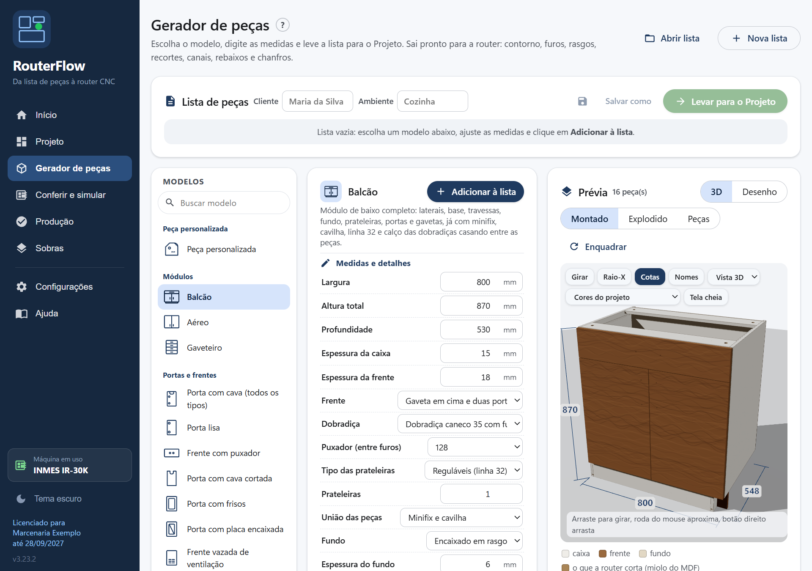
- Montado: as peças no lugar delas no móvel (balcão, aéreo, gaveteiro, gaveta, nicho, estante, colmeia, caixa dentada, banco, mesa, lâminas e frente curva). Dá para ver por dentro como a peça é segurada.
- Explodido: as mesmas peças afastadas do centro, para ver cada uma e como encaixa na outra.
- Peças: todas deitadas, lado a lado, como vão para a chapa. Modelo de uma peça só abre direto aqui.
- Arraste para girar, roda do mouse aproxima e afasta, botão direito (ou Shift) arrasta a cena, duplo clique ou Enquadrar volta ao começo. Mudar uma medida não mexe na câmera: dá para girar e aproximar para ver por dentro e seguir ajustando os números. Trocar de modelo ou de modo (montado, explodido, peças) enquadra de novo.
- Desenho troca para a prévia plana com as cotas. Nos módulos, é ali que fica "Como fica montado", a frente com o lado de abrir de cada porta.
- Os botões dentro da prévia: Vista (3D, frente, lado ou de cima), Abrir portas (só quando o móvel tem portas ou gavetas) e Tela cheia (usa o monitor inteiro, Esc volta). O resto fica em Mais, com a marca no que está ligado:
- Girar sozinho: o móvel gira.
- Raio-X: as peças ficam transparentes, cada uma com uma cor, e dá para ver o que está por dentro (cambotas, prateleiras, furos de montagem).
- Cotas: largura, altura e profundidade desenhadas no móvel.
- Nomes das peças (abaixo).
- Ocultar: sem portas e frentes, sem os aéreos, sem o tampo ou sem os fundos, para ver por dentro; Mostrar tudo volta.
- Material: as cores do projeto, MDF cru, MDF branco, madeira ou laqueada (os cortes pintados da cor da face), só para ver.
- Passe o mouse sobre uma peça para ver o nome dela.
- Nomes das peças: põe um número em cada peça e a legenda com os nomes ao lado (peças iguais levam o mesmo número). No Explodido fica fácil ver onde vai cada peça do móvel.
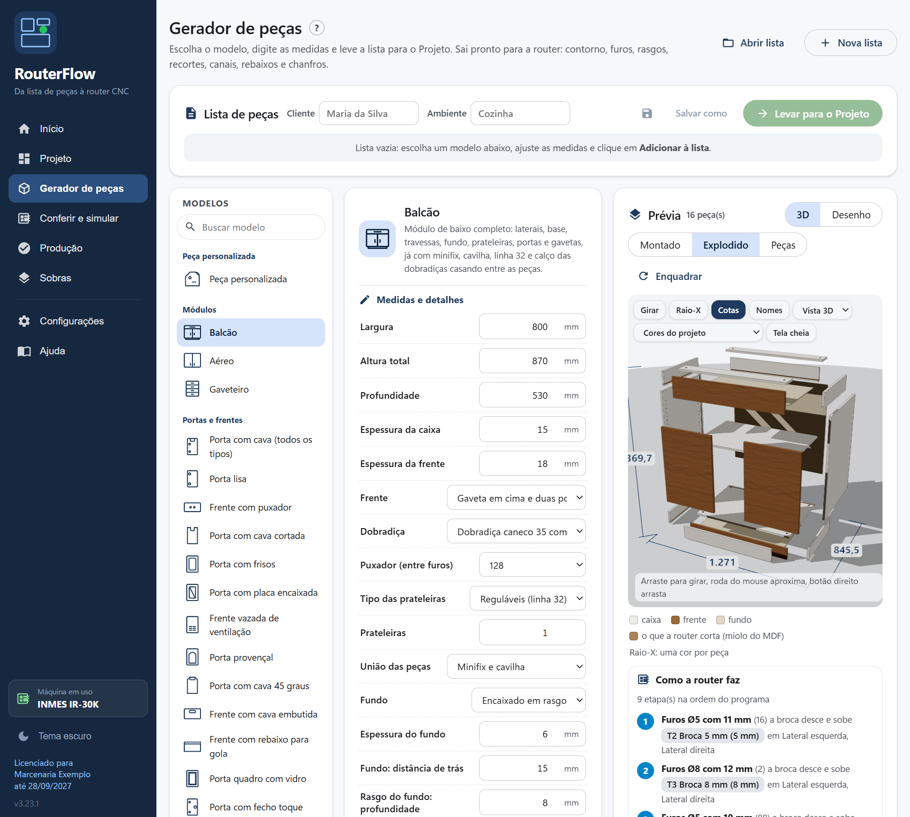
Como a router faz. Embaixo da prévia, o quadro Como a router faz lista as etapas da peça na ordem do programa (furos, rasgos, canais, rebaixos, parede invertida, chanfro, gravação, recortes, contorno, chanfro da borda), com o que cada etapa faz e a ferramenta da sua tabela que vai fazer (a mesma escolha do programa). Quando falta a ferramenta de uma etapa, aparece Falta cadastrar com o tipo que precisa e o atalho para Ferramentas. Num móvel, cada etapa diz em quais peças ela vai.
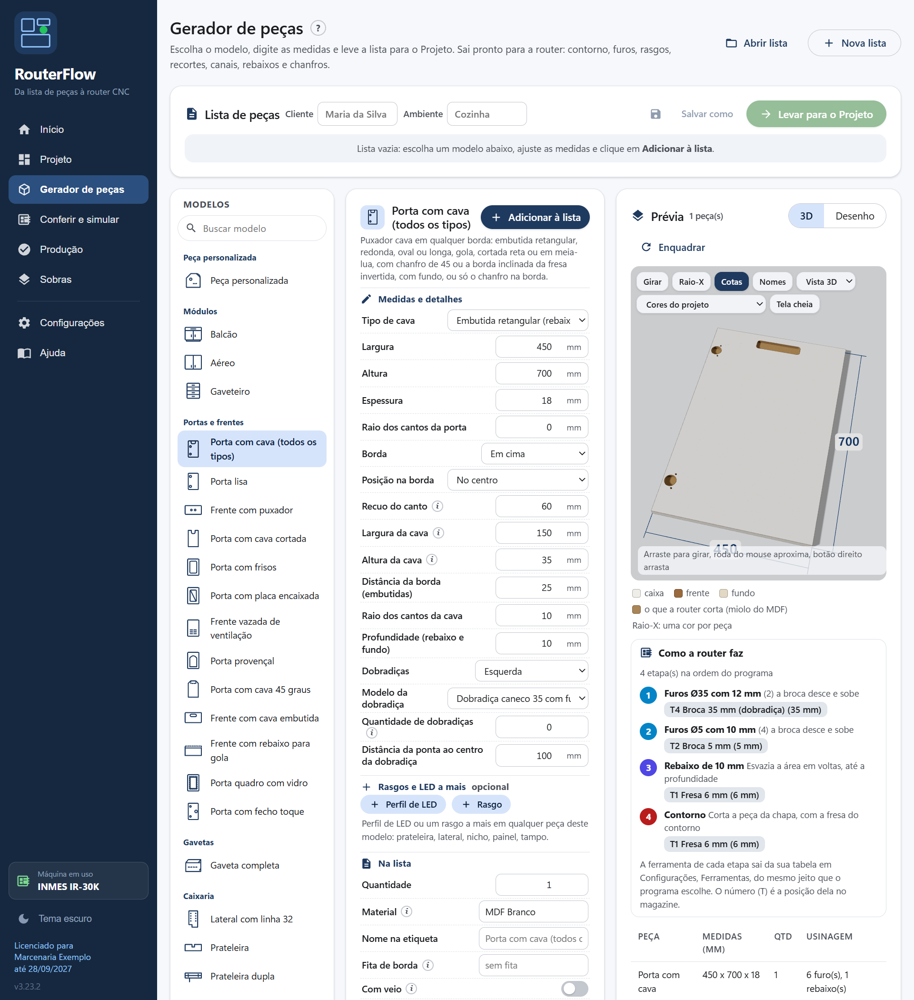

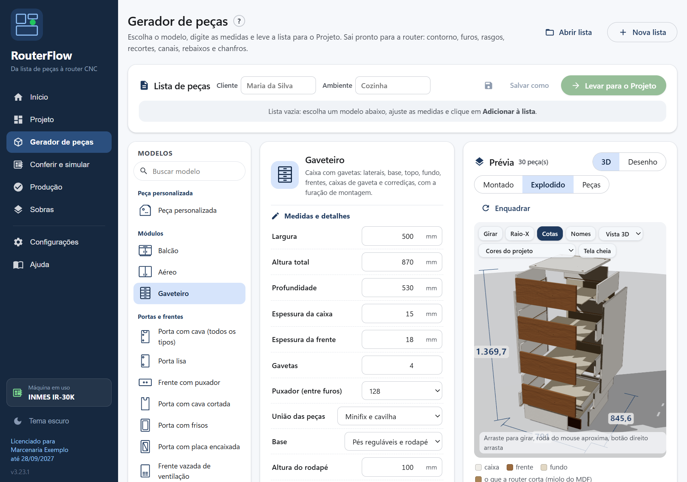
O RouterFlow lembra se você prefere o 3D ou o desenho. Em computador com placa de vídeo sem suporte a 3D (WebGL), a prévia abre no desenho.
Guardar medidas salva as medidas do modelo com um nome ("Porta 40 x 70 da cozinha") para usar em outro projeto; elas aparecem como botões embaixo do formulário. Medidas padrão volta às de fábrica do modelo.
Montador de ambiente: a parede inteira
Para a cozinha, o quarto, o banheiro ou a sala, sem abrir outro programa. Clique em Montar ambiente (o botão verde no alto do Gerador, no alto dos modelos ou na etapa 1 do Projeto).
Começar: o Montador abre vazio, com o quadro Novo ambiente. Escreva o cliente e o ambiente, escolha o formato das paredes (uma parede, em L ou em U: a planta vista de cima mostra o formato e as medidas enquanto você digita), o comprimento de cada parede, o pé-direito, a altura dos aéreos e o tampo. Começar do zero abre a parede vazia para pôr os móveis; Começar com um exemplo de cozinha já põe balcões, gaveteiro e aéreos para ver como funciona.
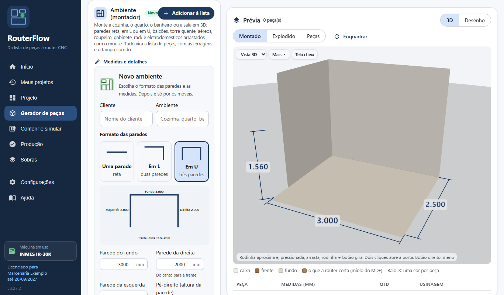
- Novo, no alto do Montador: Outro ambiente começa outro do zero e o atual fica salvo em Meus projetos; Apagar tudo deste e começar do zero tira os módulos e as peças (as paredes ficam; Ctrl+Z desfaz); Carregar o exemplo de cozinha troca os módulos pelo exemplo.
- Paredes abre o mesmo quadro a qualquer hora para mudar o formato e as medidas; os móveis ficam onde estão. Pronto volta.
- Ambiente vazio não entra na lista de peças: ponha os móveis antes de Adicionar à lista.
Sair do Montador: o botão do alto (no lugar de Montar ambiente) ou o do painel fecha o Montador e volta aos modelos do Gerador. O ambiente fica salvo em Meus projetos.
Como montar, você escolhe no alto do Montador:
- Montar no 3D (o padrão, como no Promob): o ambiente em 3D ocupa a tela, com as paredes e o piso, e o painel ao lado tem o catálogo e as medidas. Tudo se faz no 3D: arrastar, escolher, abrir portas. Outros modelos volta ao catálogo do Gerador.
- Parede de frente: a parede vista de frente, em escala, ao lado do 3D. Bom para acertar as medidas no milímetro e ver as alturas.
- Escolha as Paredes: uma parede (reta), em L (a segunda parede começa no canto da direita e vem para a frente) ou em U (a terceira vem do canto da esquerda). Digite o comprimento de cada uma (a parede pode passar do tamanho da chapa).
- Escolha os itens no catálogo, separados em abas:
- Cozinha: balcão de 2 portas, de 1 porta, gaveta e portas, gaveteiro, balcão da pia (sem prateleira, para o sifão), balcão do cooktop (gavetas para panelas), balcão de canto (canto cego, entra atrás do balcão da outra parede), torre quente (forno e micro-ondas embutidos, gavetas e porta), despensa e vassoureiro.
- Aéreos: 2 portas, 1 porta, basculante, nicho aberto, do micro-ondas, sobre a geladeira e do escorredor (sem fundo).
- Quarto: roupeiro (vãos com cabideiro ou prateleiras, maleiro e portas de abrir), cômoda, criado-mudo, sapateira e cabeceira.
- Banheiro: gabinete e gabinete com gavetas (suspensos), espelheira e torre de banheiro.
- Sala e escritório: rack, painel de TV, estante, nicho e prateleira de parede.
- Eletrodomésticos: geladeira, fogão de piso, lava-louças e máquina de lavar. Só ocupam o espaço e aparecem no 3D: não viram peça. A lava-louças fica debaixo do tampo corrido.
- Acabamento: tamponamento lateral, enchimento (fecha a sobra entre o módulo e a parede) e painel de parede.
Clique no item para pôr no primeiro vão livre da parede do fundo, ou arraste até a parede no 3D (ou no desenho da parede de frente): ele vai para a parede mais perto, no ponto onde foi solto, e encosta no vizinho. Cada um entra com os Padrões do Gerador da sua marcenaria; o aéreo entra na altura de Altura do aéreo novo.
- Arraste cada módulo pela parede: ele encosta no vizinho e nas pontas da parede (linha verde); o Encaixe escolhe de quanto em quanto ele anda e Alt solta. O que fica na parede (aéreo, gabinete, painel) e os altos também sobem e descem. Arrastando para outra parede, ele muda de parede. Na parede de frente, a alça azul do lado direito do módulo escolhido muda a largura e encosta no vizinho.
- Clique num módulo para as medidas dele, as mesmas do modelo no Gerador: altura, profundidade, frente (portas, gavetas, basculante), prateleiras, união, fundo, rodapé, dobradiça, puxador; na torre, a altura do forno e os vãos; no roupeiro, os vãos, as portas e o maleiro. Em Tipo dá para trocar o módulo por outro do catálogo no mesmo lugar. Encostar à esquerda, Duplicar ao lado e Excluir ficam no painel. Setas movem o escolhido, Delete apaga, Ctrl+Z desfaz.
- Qualquer peça do ambiente: clique com o botão direito numa peça no 3D (uma lateral, uma porta, o tampo, uma prateleira) e escolha Editar esta peça, ou abra Peças deste módulo no painel do módulo (os tampos ficam no painel quando nenhum módulo está escolhido). A peça abre no editor da Peça personalizada com o contorno, os furos (dobradiça, puxador, linha 32), os rasgos e os cortes dela: mude a medida, apague, mova ou ponha furos, rasgos, dobradiças, cortes, e escolha o material (da caixa, da frente ou do fundo). Aplicar no ambiente volta ao Montador com a peça mudada no lugar dela; Cancelar volta sem mudar. Os furos de topo (minifix e cavilha) ficam como estavam. No mesmo menu, Tirar esta peça tira a peça do ambiente (o fundo de um módulo, por exemplo) e Voltar esta peça ao original desfaz o que foi mudado. A peça editada aparece com o selo editada na lista; se o módulo mudar de medida depois, um aviso pede para conferir a peça.
- Peça solta: em Acabamento, a Peça solta (desenhe) abre o editor para desenhar qualquer peça. Depois, no painel, escolha a Posição (de frente na parede, deitada como prateleira ou em pé de lado), a distância da parede, o material e o nome; ela anda pela parede, sobe e desce como os outros módulos. Desenhar a peça reabre o editor.
- Tampo sobre os balcões: o tampo de MDF corrido sobre os balcões, gaveteiros e a lava-louças seguidos e na mesma altura (um tampo para cada sequência; o gabinete do banheiro ganha o dele), com a espessura e o quanto avança na frente. Para tampo de pedra, escolha Sem tampo.
Mexer no 3D, com o mouse do jeito do Promob:
| No mouse ou no teclado | O que faz |
|---|---|
| Rolar a rodinha | Aproxima e afasta, no ponto onde está o mouse |
| Rodinha pressionada e arrastar | Arrasta a vista |
| Rodinha e um botão pressionados, arrastando | Gira o ambiente |
| Sem rodinha (notebook) | Arrastar no vazio gira; Shift e arrastar arrasta a vista |
| Clique num módulo | Escolhe (linhas azuis); o painel de medidas mostra ele |
| Arrastar o módulo escolhido | Anda pela parede, encostando no vizinho e nas pontas; com Alt, o aéreo sobe e desce; com Shift, solta o encaixe |
| Dois cliques numa porta ou gaveta | Abre e fecha só ela |
| Dois cliques em outra parte do módulo | Aproxima dele |
| Botão direito | Menu: medidas, abrir e fechar as portas, ocultar, ver de perto, duplicar, copiar, excluir, colar, adicionar |
| Delete, Ctrl+Z, Ctrl+Y | Exclui, desfaz, refaz |
| Setas | Esquerda e direita andam pela parede; cima e baixo sobem e descem o aéreo |
| Ctrl+D, Ctrl+C, Ctrl+V | Duplica ao lado, copia, cola no primeiro vão livre |
| O | Oculta e mostra o módulo escolhido |
| E | Abre as medidas do módulo escolhido |
| F6 | O ambiente inteiro na tela |
| F8 | Troca entre perspectiva e ortogonal |
Na barra do 3D, Abrir portas abre e fecha todas as portas e gavetas; em Mais, Sem portas e frentes, Sem os aéreos, Sem o tampo ou Sem os fundos mostram por dentro, e Paredes e piso da sala tira ou põe as paredes (de fora elas ficam transparentes, para a câmera ver o ambiente). Clique no 3D antes de usar as teclas.
Módulo vermelho é problema: dois módulos no mesmo lugar, um que passa do fim da parede, ou os dois de um canto se cruzando (afaste um deles a profundidade do outro, deixe o vão ou use o balcão de canto). O aviso amarelo embaixo da prévia diz qual.
Adicionar à lista põe o ambiente inteiro como um item: cada peça sai com o número do módulo no nome (M1 Lateral esquerda, M3 Porta direita...), as ferragens de todos os módulos somadas e o material da caixa, da frente e do fundo do item. Dali segue para o Projeto como as outras peças.
Módulos completos
O grupo Módulos, o primeiro da lista, monta o móvel inteiro de uma vez: Balcão (módulo de baixo), Aéreo (módulo de cima) e Gaveteiro. Você digita largura, altura e profundidade e escolhe a frente (duas portas, uma porta, gavetas, gaveta em cima e duas portas, porta basculante no aéreo), as prateleiras, o fundo, a base e a união das peças. Saem todas as peças, já furadas para montar:
- Laterais esquerda e direita, uma espelhada da outra: as duas são cortadas com a face de dentro para cima.
- Base, travessas (balcão) ou topo (aéreo e gaveteiro) entre as laterais, fundo encaixado em rasgo (ou pregado atrás, ou sem fundo), prateleiras reguláveis na linha 32 ou fixas. O fundo pregado atrás sai 4 mm menor que a caixa, na largura e na altura.
- Portas sobrepostas com o caneco das dobradiças, frentes de gaveta com a caixa da gaveta pelo vão e a corrediça do tamanho que cabe, rodapé quando a base é de pés reguláveis.
- União das peças casando: com Minifix e cavilha, a peça horizontal leva o tambor de 15 mm na face (a 34 mm da ponta), o furo do pino no topo, e a lateral leva o furo do pino no mesmo lugar; no meio da profundidade vai uma cavilha. Com Só cavilha, só cavilhas. Com Parafuso, a lateral leva furos passantes de 5 mm (a 40 mm das pontas e no máximo 25 cm entre eles) e a peça horizontal o furo guia de 3 mm no topo, para parafuso 4,0 x 40. Os furos de topo saem na folha de furação de topo, para a furadeira horizontal.
- Calço da dobradiça: a lateral do lado da dobradiça já sai com os dois furos do calço na altura de cada caneco da porta.
- Fita só onde vai: a borda da frente das peças da caixa e as quatro bordas das portas e frentes.
- Material da frente separado do da caixa (portas, frentes de gaveta e rodapé) e material do fundo.
- Ferragens: minifix, cavilhas, dobradiças, corrediças, suportes de prateleira, pés, clips de rodapé e puxadores entram na lista de ferragens e na ficha de produção do projeto, somando todos os módulos da lista.
- Montado em 3D: a prévia abre com o módulo montado; em Explodido dá para ver cada peça e as caixas das gavetas.
- Como fica montado (na prévia em Desenho): a frente do módulo com as portas, as gavetas e o rodapé, em escala, com o lado de abrir de cada porta.
Os modelos
| Modelo | O que sai |
|---|---|
| Ambiente (montador) | A parede inteira, reta ou em L, com balcões, gaveteiros, aéreos e armários altos arrastados com o mouse, o tampo corrido e a lista de todas as peças e ferragens. Veja o Montador de ambiente, acima. |
| Balcão | Módulo de baixo completo: laterais, base, travessas, fundo, prateleiras, portas e gavetas, com minifix, cavilha, linha 32, calço das dobradiças, rodapé e as ferragens. |
| Aéreo | Módulo de cima completo: laterais, base, topo, fundo, prateleiras e portas de giro ou basculante, com a furação de montagem e as ferragens. |
| Gaveteiro | Caixa com gavetas: laterais, base, topo, fundo, frentes, caixas de gaveta e corrediças, com a furação de montagem. |
| Porta lisa | Porta com cantos arredondados (ou em quina) e a furação das dobradiças no lado escolhido: caneco de 35 mm e os furos de fixação. A quantidade sai sozinha pela altura (2 até 90 cm, 3 até 1,60 m, 4 até 2 m, 5 acima) ou do jeito que você digitar. Chanfro de 45 graus na borda toda (0 deixa sem): a fresa reta corta a porta e abre a sobra em volta, depois a fresa V passa na borda já cortada. A prévia 3D mostra a borda chanfrada. |
| Frente com puxador | Frente de gaveta ou porta com os furos do puxador (96, 128, 160, 192, 256 ou 320 mm entre furos, ou um furo de botão), centralizados ou a uma distância do topo. |
| Porta com cava (todos os tipos) | Um modelo com todas as cavas, em qualquer borda (em cima, embaixo ou de um lado), no centro ou deslocada pelo recuo do canto, e as dobradiças: embutida retangular, redonda (tipo caneco) ou oval; longa, ao longo da borda; gola, rebaixo saindo da borda; cortada reta ou em meia-lua; cortada com chanfro de 45 (fresa V, só na cava ou na borda toda); cortada com a borda invertida (fresa invertida); com fundo e parede em 45 graus (fresa V); com fundo e a parede invertida (fresa reta e fresa invertida, veja abaixo); e o puxador na própria borda, sem recorte: chanfro de 45 ou borda invertida por baixo (tipo puxador J). Avisa quando a cava cai do lado das dobradiças. |
| Porta com cava cortada | Recorte na borda de cima ou de baixo para pegar a porta sem puxador, no centro ou deslocado, com cantos arredondados. Em Acabamento da cava: cortada, borda reta; cortada, borda inclinada por baixo, com a fresa invertida (rabo de andorinha) na profundidade escolhida, para o dedo entrar embaixo; com fundo e a parede inclinada, em que a cava não atravessa: a fresa reta esvazia até o fundo e a fresa invertida deixa a parede inclinada; ou chanfro de 45 graus com a fresa V, na borda toda (o contorno da porta e as paredes da cava, como nas portas de puxador cava) ou só na cava. O chanfro de 45 é feito depois do contorno: a fresa reta corta a porta e abre a sobra em volta, e a V passa na borda já cortada. Deixe folga entre peças de pelo menos o tamanho do chanfro mais 1 mm. A cava cortada também pode levar dobradiças. A borda inclinada sai do lado que fica para cima na máquina. A fresa invertida abre um círculo largo embaixo: perto da ponta da cava, se ela encostaria na peça vizinha, o caminho para antes e o projeto avisa (aumente a folga entre peças para ir até a ponta). |
| Porta com frisos | Frisos (canais) em quadro, um ou vários, ou em linhas verticais ou horizontais, com fresa reta, fresa V ou ponta redonda. |
| Porta provençal | Moldura na face com fresa de perfil, V ou ponta redonda: reta, de cantos arredondados, capela (arco em cima), capela dupla ou de cantos recortados. Pode rebaixar o miolo (almofada) e leva as dobradiças. |
| Porta com cava 45 graus | Chanfro de 45 graus na borda de cima ou de baixo, na largura toda ou num trecho, com a fresa V, e as dobradiças. Cortada com o lado de dentro para cima (a cava fica atrás, do lado das dobradiças). |
| Frente com cava embutida | Rebaixo na face, perto do topo, para puxar sem puxador: retangular, redondo (tipo caneco) ou longo, na largura toda. Cortada com a frente para cima. |
| Porta com placa encaixada | Uma placa fina (6 mm) encaixada na porta: num rebaixo no centro, colada dentro, ou numa abertura com rebaixo em volta, no lugar do vidro. A placa sai no material do fundo, então pode ser de outra cor. Leva dobradiças. |
| Frente vazada de ventilação | Rasgos passantes de pontas redondas, em linhas, na porta toda ou numa faixa em cima ou embaixo. Leva dobradiças. |
| Frente com rebaixo para gola | Rebaixo ao longo da borda de cima, de baixo ou das duas, para o perfil gola ou puxador de encaixe. |
| Porta quadro com vidro | Abertura recortada, rebaixo em volta para assentar o vidro e as dobradiças. Tudo é configurável: moldura de cima, de baixo e das laterais, a quantidade de vidros, um embaixo do outro ou lado a lado, o tamanho de cada vidro (na ordem, separados por espaço, por exemplo 600 auto 300; vazio ou auto divide o que sobra por igual) e a travessa entre eles (um número vale para todas, ou uma por travessa, por exemplo 70 100). A tabela diz a medida de cada vidro; se os tamanhos não fecharem com a porta, aparece um aviso. |
| Porta com fecho toque | Rebaixo redondo ou retangular do fecho toque (ou do ímã) do lado que abre, oposto às dobradiças. |
| Gaveta completa | A caixa inteira a partir do vão: duas laterais, frente interna e traseira, e o fundo encaixado em rasgo. Desconta a folga da corrediça (12,5 mm por lado nas telescópicas). |
| Lateral com linha 32 | Lateral de armário com as duas fileiras de furos de pino de prateleira (passo 32), recorte do rodapé e rasgo do fundo. |
| Prateleira | Com recorte retangular ou em meia-lua na borda de trás, para cano ou fio. |
| Prateleira com LED | Rebaixo do perfil de LED ao longo da prateleira, de ponta a ponta ou parando antes, e o furo do fio. |
| Prateleira dupla | Prateleira engrossada de duas chapas coladas, alinhadas por cavilhas que casam nas duas, com o rasgo das hastes do suporte invisível (metade em cada chapa). |
| Tampo com recortes | Tampo com o recorte da cuba, do cooktop ou da tomada (da tabela de recortes ou com medidas à mão) e passa-fios. A posição é medida da frente do tampo até a borda do recorte. |
| Tampo em L | Bancada de canto numa peça só. Confira se cabe na chapa. |
| Tampo orgânico | Tampo de forma livre para mesa de centro, aparador ou ilha: oval, superelipse (retângulo de cantos cheios), ovo, seixo ou feijão, sempre do tamanho digitado, com passa-fios. Na chapa, as peças menores entram nos cantos que a curva deixa. |
| Canto curvo | Canto arredondado de móvel: a estrutura por dentro e o revestimento (MDF flexível ou MDF comum com cortes de flexão) dando a volta, com as abas retas para prender no móvel. Um canto, dois cantos do mesmo lado ou meia-lua. Estrutura por dentro: cambotas inteiras (chapas com o canto curvo, na altura) ou base e tampo com ripas curvas e montantes: base e tampo inteiros, ripas em arco que acompanham o lado de dentro do revestimento e, no começo e no fim de cada curva, um montante em pé. As espigas das pontas das ripas atravessam os encaixes dos montantes (um ou dois por ponta, com folga e cantos para a fresa), e os montantes são parafusados na base e no tampo. Os cortes de flexão ficam só no trecho curvo; parafusado, as abas levam os furos sobre cada cambota ou ripa. |

| Pé revestido | Pé de mesa, balcão ou banco: anéis de montagem por dentro (com furo para a barra roscada) e o revestimento planificado, cortado plano para dobrar em volta. Redondo, cônico, oval, oblongo, cone elíptico, quadrado ou cônico quadrado (esses dois em placas). O revestimento pode sair em até quatro partes. |
|---|---|
| Painel ripado em canais | Em Canais na chapa: painel inteiro com canais paralelos pelo passo e pela largura, com cara de ripado. Em Ripas soltas num painel de fundo: as ripas e o painel de fundo, presos com cavilha (os furos de 8 mm casam na face de trás da ripa e no painel, a 5 cm das pontas e no máximo na distância escolhida entre eles) ou com parafuso por trás (furos passantes no painel). |
| Ripas soltas | Ripas cortadas uma a uma, para colar num painel. Ripa estreita pede pele fina (Configurações, Corte). |
| Painel acústico | Painel com furos ou rasgos passantes em grade, pelo passo nos dois sentidos e com margem. |
| Muxarabi de ripas encaixadas | Ripas horizontais e verticais que se cruzam em meia-madeira, numa espessura só: cada ripa leva um rebaixo de meia espessura em cada cruzamento, e as verticais montam viradas, rebaixo contra rebaixo. Fitado põe fita nas pontas das ripas. |
| Muxarabi | Painel vazado com padrão de quadrados, losangos, círculos ou hexágonos, com moldura em volta. A barra fina demais avisa. |
| Cabeceira | Topo reto, em arco ou de cantos arredondados, e canais retos, canais em V ou friso em quadro na face. |
| Placa com letreiro | Texto de uma ou duas linhas gravado em traço, com fresa V ou reta, centralizado, e furos de fixação. |
| Painel ondulado em lâminas | Lâminas em pé, lado a lado, cada uma com a frente em onda um pouco defasada da vizinha: a onda aparece em 3D no conjunto. Por trás, espinhas deitadas seguram as lâminas por meia-madeira (a lâmina tem a fenda de trás, a espinha a da frente) e vão parafusadas na parede. Cada lâmina sai com o número gravado para montar na ordem. |
| Frente curva com cambotas | Balcão, cabeceira ou frente curva: as cambotas (costelas deitadas) são cortadas com o arco pela largura e pela flecha, e seguram o revestimento. O revestimento é MDF flexível ou MDF comum com cortes de flexão atrás, calculados pelo raio: a nota diz quantos cortes, a distância entre eles e a pele que fica. |
| Painel ondulado 3D | Ondas em relevo com a ponta redonda: retas, curvas, diagonais ou bolhas, pela distância entre ondas e pela profundidade. O passo menor deixa mais liso e demora mais. |
| Placa com texto em V | Texto com fonte de verdade (as fontes instaladas no Windows: Arial, Georgia, Impact, Cooper...) esculpido com a fresa V: a lateral do V encosta na borda da letra e o meio das letras largas fica com fundo chato na profundidade máxima. Aceita acentos e minúsculas. |
| Placa com letras vazadas | Letras que atravessam a placa, como estêncil. O miolo do O, A, B, D fica preso por uma ponte da largura escolhida. |
| Letras soltas (letra caixa) | Cada letra do texto vira uma peça cortada pelo contorno da fonte, com o miolo recortado, para fachada, painel e festa. |
| Nicho | Laterais, base e topo, e o fundo encaixado em rasgo. A união das peças pode ser minifix e cavilha, só cavilha, parafuso ou sem furação. |
| Painel com rasgos para divisórias | Base ou topo com rasgos para encaixar divisórias, e as divisórias se quiser. No lugar do rasgo, as divisórias podem ir com parafuso, minifix ou cavilha. |
| Colmeia (meia-madeira) | Grade de nichos ou adega com peças que se cruzam por fendas até a metade. Use a espessura medida da chapa. A fenda sai um pouco mais funda (alívio) porque a fresa deixa o fundo arredondado. Em Montagem, a colmeia pode ter caixa por fora (laterais, base e topo): as peças do meio param na face de dentro da caixa e não aparecem do lado de fora. A caixa e as pontas das peças do meio se unem em rasgo (sem parafuso), com parafuso, com minifix e cavilha ou com cavilha. A grade inteira em meia-madeira, sem caixa, continua como opção. |
| Estante encaixada | Laterais com rasgos e prateleiras com linguetas que atravessam (tab and slot), sem parafuso. Os rasgos e as linguetas saem com dog-bone: a fresa entra em cada canto para ele ficar vivo e o encaixe fechar. Meça a espessura real da chapa. Em Montagem, troque o encaixe por parafuso, minifix e cavilha ou só cavilha: as prateleiras ficam entre as laterais, furadas para a ferragem. |
| Caixa com encaixe dentado | Caixa com as quinas em dentes (box joint), com dog-bone, e o fundo em rasgo. Com parafuso, minifix ou cavilha, a frente e o fundo ficam inteiros e as laterais entre eles. |
| Banco encaixado | Assento com rasgos, dois pés com linguetas que atravessam o assento (e um vão embaixo para apoiar nas pontas) e a travessa que atravessa os pés. Monta sem parafuso. Com parafuso, minifix ou cavilha, os pés ficam lisos em cima, o assento sem rasgos e a travessa entre os pés. |
| Banco em L | Assento em L numa peça só e três pés de painel (na ponta de cada braço e no canto), com parafuso, minifix ou cavilha. |
| Banco com encosto inclinado | Duas laterais recortadas no perfil, com a direita espelhada para os furos ficarem do lado de dentro, o assento, o encosto inclinado e uma travessa. |
| Mesa lateral encaixada | Tampo redondo ou quadrado e dois pés que se cruzam em X por meia-madeira, com linguetas entrando no tampo ou com o tampo preso por baixo com cantoneiras. |
| Gabarito de furação | Chapinha com furos-guia para montar na obra: dobradiça, puxador ou linha 32. |
| Torre de aprendizagem | Torre Montessori: duas laterais com as costas inclinadas (a direita espelhada, com os rasgos do lado de dentro), a plataforma e o degrau encaixados em rasgo e presos com parafuso ou cavilha, as barras de proteção em cima e, se quiser, a do meio na frente, e uma janela grande ou uma alça na lateral. Meça a espessura real da chapa. Avisa quando a proteção acima da plataforma fica baixa. |
| Prateleira flutuante | Prateleira sem suporte aparente: os furos das hastes na borda de trás (saem na folha de furação de topo) e um gabarito fino com os furos nos mesmos lugares, para furar a parede. |
| Relógio de parede | Redondo ou quadrado, com os números de 1 a 12, romanos, só 12, 3, 6 e 9, ou traços, em V com a fonte ou em traço, os pontos dos minutos, o furo do eixo e o rebaixo da máquina no verso. |
| Porta-chaves de parede | Placa com o texto gravado, os furos dos ganchos em fila e dois furos de fixação. |
| Porta veneziana | Frisos paralelos retos (deitados) ou inclinados dentro de uma moldura lisa, com fresa V, reta ou ponta redonda, um friso de quadro em volta e as dobradiças. |
| Painel 3D por padrão | Relevo repetido na face toda: diamante, pirâmides, escamas, ondas cruzadas ou covinhas, pelo tamanho do módulo e pela profundidade, com a ponta redonda ou a fresa V. |
| Painel canaletado (expositor) | Painel de loja com rasgos horizontais num passo fixo, de ponta a ponta ou parando antes, para ganchos e prateleiras de expositor, e furos para parafusar na parede. |
Os modelos que chegaram nas últimas versões aparecem com o selo verde Novo no catálogo.
Cortes especiais: o que segura a peça
Alguns desenhos não saem de uma chapa só e precisam de estrutura por trás. A prévia 3D em Montado e Explodido mostra essa estrutura:
- Painel ondulado em lâminas: a onda é feita pelo perfil de cada lâmina, não por usinagem na face. As espinhas passam por trás de todas as lâminas; meça a espessura real da chapa e ajuste a folga do encaixe antes de cortar tudo. O número gravado em cada lâmina (1, 2, 3...) dá a ordem de montagem.
- Frente curva com cambotas: distribua as cambotas na altura (a nota diz onde), cole e grampeie o revestimento por cima. Com MDF comum, os cortes de flexão ficam do lado das cambotas; cortes mais juntos curvam mais liso. Teste numa sobra antes quando o raio for pequeno.
Fontes de contorno
Texto em V, letras vazadas e letras soltas usam as fontes TrueType instaladas no Windows. O campo Fonte lista as que existem no computador. Fonte negrito corta melhor: traço mais fino que a fresa não sai (o RouterFlow avisa). Numa lista salva vai o nome da fonte; se ela não existir em outro computador, escolha outra.
Cava com fundo e parede invertida (fresa invertida)
É a cava das portas de puxador cava: aberta na borda da porta, com fundo (não atravessa), e a parede entrando inclinada por baixo da face, onde o dedo pega. A fresa reta abre a cava até o fundo e a fresa invertida (rabo de andorinha, 45 graus por exemplo) passa na parede na profundidade cheia. Em Porta com cava (todos os tipos):
- Tipo de cava: Com fundo e a parede invertida (fresa reta e fresa invertida).
- Largura da cava, Altura da cava e Raio dos cantos da cava: a abertura na face.
- Profundidade: quanto a cava desce (a fresa invertida passa nessa profundidade). Numa porta de 18 mm, 13 deixa um fundo de 5 mm.
- Ângulo da fresa invertida: o da sua fresa (45 graus deixa a parede em 45).
- Chanfro de 45 na borda da porta: o chanfro da borda com a fresa V, depois do contorno (0 deixa a borda reta). Maior que a profundidade da cava, ele chanfra também a frente do fundo.
Posição na borda: no centro ou no canto (da esquerda ou da direita). No canto, com Recuo do canto 0, a cava vai até a lateral da porta, reta daquele lado, sem borda entre ela e o canto; a ponta arredondada fica só do outro lado. Recuo maior que 0 deixa borda até o canto.

Antes de mandar para a router, cadastre a fresa invertida em Configurações, Ferramentas: Adicionar ferramenta, tipo Fresa invertida (de cava, rabo de andorinha), Diâmetro = o diâmetro de baixo (o maior), Ângulo = o da fresa (45), rotação, avanço e mergulho (mergulho baixo: ela desce com a boca inteira cortando), e o número T igual à posição dela no magazine da máquina. A fábrica traz uma de 35 graus e 40 mm (T8): edite essa ou crie outra. O programa usa a fresa invertida com o ângulo mais perto do pedido; se a cadastrada for de outro ângulo, o projeto avisa. A fresa precisa ser larga o bastante para a profundidade: com 45 graus, o raio de baixo menos a profundidade tem de sobrar acima de 0,5 mm (13 mm de fundo pedem pelo menos 27 mm de diâmetro). Para o chanfro da borda, a Fresa V de 90 graus.
Por onde a fresa invertida entra. Ela é mais larga embaixo do que em cima: se descesse em cima da porta, a parte larga abriria um buraco redondo na face. Por isso o RouterFlow faz ela descer fora da porta, afastada da borda mais do que o raio de baixo, e entrar de lado na cava que a fresa reta já abriu; ela sai por fora também (ou volta pelo mesmo caminho, quando só um lado tem espaço). Para isso o encaixe deixa sozinho um corredor livre do lado por onde a cava sai, do diâmetro de baixo da fresa mais 3 mm (43 mm com a de 40), e espaço do raio nos outros lados abertos (a cava no canto sai por dois lados). Duas portas com a cava de frente uma para a outra (uma no canto direito, a outra no canto esquerdo) ficam lado a lado e dividem o mesmo corredor. O que o encaixe fez aparece nos avisos do projeto, por exemplo "G2 e G1 ficaram lado a lado com 43 mm entre as cavas". Se você mexer as peças no editor e tirar esse espaço, a cava sai com o aviso "não tem por onde entrar" em vez de estragar a porta.
Na router, em Conferir e simular, o programa da chapa mostra cada etapa com a ferramenta dela. No Passo a passo, uma linha cinza marca cada troca de ferramenta:
- Ferramenta T1 (fresa reta): Rebaixo da peça, esvazia a cava até o fundo.
- Ferramenta T9 (a fresa invertida, ou o número que você cadastrou): Parede invertida (fresa invertida), uma passada só na profundidade cheia.
- Ferramenta T1: Contorno, corta a porta.
- Ferramenta T5 (fresa V): Chanfro 45 (fresa V) na borda da porta, quando ligado.
Na Simulação, a linha do tempo pinta cada etapa de uma cor (a parede invertida em rosa escuro) e marca as trocas de ferramenta; o painel da controladora mostra a ferramenta em uso e, no 3D, ela aparece "em uso" no magazine. Com troca manual de ferramenta (Configurações, Sua router), o programa para (M0) antes de cada troca e pede para montar a ferramenta.
Existe também Com fundo e parede em 45 graus (fresa V), para quem faz a parede com a V por cima, em 45 graus da face até o fundo ou só na boca.
Na prévia 3D, Material, Laqueada (cortes pintados) mostra a porta como fica depois de pintada: os cortes da cor da face.
A lista e o Projeto
A lista no alto da tela junta tudo o que você adicionou, de vários modelos. Escreva o cliente e o ambiente: eles dão nome ao projeto, à pasta e aos arquivos, como no CSV. Em cada item, Editar carrega as medidas de volta no formulário (o botão vira "Salvar o item"), o botão de copiar duplica e o X tira da lista.
Salvar lista grava a lista num arquivo .rfpecas em Documentos, RouterFlow, Listas de peças, com o nome do cliente e do ambiente. Abrir lista (no alto) reabre uma lista salva; Nova lista começa outra.
Levar para o Projeto salva a lista e coloca o arquivo na etapa 1 do Projeto. Se já houver um projeto aberto, o RouterFlow pergunta se começa um projeto novo ou se a lista entra junto no projeto aberto, nas mesmas chapas. Daí para a frente é o caminho de sempre: confira a chapa e a máquina e clique em Gerar chapas.
O que a router faz com as peças do gerador
- Recorte interno (cuba, cooktop, tomada, passa-fio, recorte da prateleira): a fresa corta por dentro, pelo raio, no sentido contrário ao do contorno (assim o acabamento fica igual dos dois lados), e sempre antes do contorno da peça, enquanto a peça ainda está presa pela chapa inteira.
- Canal (frisos, ripado): passes na largura do canal e na profundidade, com a fresa de rasgo. Canal mais largo que a fresa ganha passadas lado a lado.
- Canal com fresa V ou ponta redonda (friso em V, meia-cana, canais em V da cabeceira): uma passada pelo centro; a largura na chapa sai da profundidade. Em Conferir e simular o traço aparece com essa largura.
- Rebaixo (cava embutida, gola, vidro, fecho toque, LED): a maior fresa reta que cabe esvazia a área em laços, do meio para a borda, em cada passe de profundidade. O rebaixo do vidro esvazia só a faixa em volta da abertura; o meio sai depois no recorte.
- Chanfro 45 (cava 45): a ponta da fresa V anda na borda da peça e metade do V corta fora dela. O RouterFlow mede o espaço até a peça vizinha na chapa; se não couber, a passada entra um pouco na peça e fica um friso na quina, com aviso dizendo a folga que deixa o chanfro perfeito (a folga entre peças fica em Configurações, Chapas e folgas).
- Dog-bone (estante encaixada, caixa dentada): nos cantos vivos a fresa avança até tocar o vértice, deixando um pequeno alívio redondo. Assim o encaixe fecha, mesmo com a fresa redonda.
- Marcação: o código da peça gravado a 0,8 mm, com a menor fresa cadastrada. O letreiro usa a fresa V quando escolhida.
- Relevo 3D (painel ondulado): a ponta redonda anda em passadas paralelas e em cada ponto desce a profundidade da onda. Onda mais funda que o passe da ferramenta sai em níveis (desbaste), e passadas vizinhas ligam por dentro, sem subir.
- Texto em V: o programa calcula as passadas com o ângulo da fresa V cadastrada, para a lateral encostar exatamente na borda de cada letra (V-carve). O DXF leva os contornos das letras na camada VCARVE, para quem prefere fazer no Aspire.
- Letra vazada e letra solta: o caminho da fresa em volta de uma letra (cheia de curvas e cantos para dentro) é calculado numa grade fina, e não pelo deslocamento das arestas, para não errar nos cantos. A ponte do estêncil fica sem cortar.
- Moldura com fresa de perfil: uma passada pelo desenho da moldura, na profundidade pedida.
- A ordem é: furos, rasgos, canais, rebaixos, chanfros, marcação, recortes internos e, por último, os contornos.
- Os programas separados seguem a regra das etapas: canais, rebaixos, chanfros e marcação vão no Só rasgos. Os recortes internos têm o Só recortes (só os vazados, sem o contorno da peça) e também vão no Só contornos, antes do contorno, para quem roda por etapas não esquecer nenhum vazado.
- No DXF, para quem ainda usa o Aspire, as camadas novas são RECORTE, CANAL_L(largura)_P(profundidade), CANAL_V_P(profundidade), REBAIXO_P(profundidade), CHANFRO45_(tamanho) e MARCA_P(profundidade).
Como em qualquer programa novo: rode primeiro com corte no ar e depois numa sobra de MDF, uma operação por vez. As medidas de ferragem e de recorte de fábrica são as mais comuns no mercado; confira sempre no manual do fabricante.
Conferir e simular
Conferir e simular abre sozinho no programa completo da primeira chapa quando você vem do projeto. Abrir outro .nc carrega qualquer programa, inclusive de outra origem (Aspire, por exemplo), para conferir.
A tela inteira cabe na janela, também num notebook: a lista das chapas tem rolagem própria e o desenho com o painel ocupam o resto, até o fim da tela, sem precisar rolar com o mouse em cima do desenho (ali a roda dá zoom).
A faixa dos passos, no alto, é a mesma linha do tempo da tela Projeto, numa linha só: os passos já feitos com o sinal de certo, Conferir em destaque (você está aqui) e Produção depois. Voltar ao Projeto, à esquerda, leva de volta às chapas, ao editor e às opções; clicar num passo feito também volta. Ir para a Produção, à direita, é o próximo passo: fica verde e pulsando quando um programa está aberto. Sem programa aberto, o painel da direita diz por onde começar.
A lista de programas vem aberta, uma linha por chapa (e uma para o verso, quando existe), com material, número da chapa, tempo, operações, avisos e as zonas de vácuo (pare o mouse em cima para ler tudo). O título da lista diz qual programa está aberto e lembra o que cada botão faz. À direita do título: a seleção rápida, que troca de programa sem abrir a lista, o botão da pasta dos .nc e a seta que recolhe a lista. Com muitas chapas, a lista rola por dentro e não empurra o desenho para fora da tela. Enquanto o simulador está ligado, a lista fica recolhida numa linha para o 3D ganhar altura; saindo do simulador ela volta como estava.
Cada linha tem os programas daquela chapa como botões:
| Botão | O que faz |
|---|---|
| Completo | Abre o programa que faz tudo da chapa na ordem certa: furos, rasgos e por último os contornos. É o que vai para a máquina no dia a dia |
| + Só furos, + Só rasgos, + Só recortes, + Só contornos, + Só sobra (tracejados) | Geram na hora o programa só com aquela operação e já abrem. Só sobra faz só os cortes que soltam a sobra da chapa, mesmo com Cortar a sobra desligado no projeto (aí a sobra fica fora do completo e só sai nesse programa); aparece quando a chapa tem sobra (Mostrar a sobra de cada chapa ligado). Servem para rodar por etapa, por exemplo furar tudo antes, trocar a ferramenta e depois cortar. Só recortes faz só os vazados internos, sem o contorno: serve para furar uma peça que já foi cortada. Ponha a peça no mesmo lugar em que ela está no mapa da chapa; uma peça sozinha com Sem margem da chapa (Gerador de peças) fica encostada no canto do zero, o que facilita |
| Só furos (depois de gerado) | Abre de novo o programa da etapa. O botão marcado em azul é o que está aberto |
| x ao lado de um programa da etapa | Apaga esse programa. Se ele estava aberto, a tela volta ao Completo |
Os botões de etapa só aparecem quando a chapa tem mais de um tipo de operação. Chapa só com contornos, por exemplo, mostra "só tem contornos: o completo já é ele". Os programas da etapa valem para a chapa e para o verso dela, e vão para o pendrive junto com os outros na Produção. Isso vale também para programas com as linhas numeradas (N10, N20...), como os do pós-processador da INMES: o passo a passo mostra cada operação com o tipo certo.
O desenho: a mesa com a área útil tracejada, a chapa como foi gerada (deitada ou em pé; vermelha se não cabe), a grade de vácuo com as zonas a abrir em verde, e o percurso colorido pela legenda: cinza rápido, vermelho corte passante, laranja rampa ou corte parcial, azul furo, verde início de operação, branco a operação atual. Passe o mouse sobre um traço para ver a linha do programa. A legenda das cores fica no canto de baixo do desenho.
A barra em cima do desenho é uma linha só: o nome do arquivo (o botão da pasta mostra ele no Explorador), o botão verde Simular, e os botões de ícone, cada um com a explicação ao parar o mouse: afastar e aproximar, enquadrar a mesa inteira, girar a visão (ver em pé ou deitada), Material, P M G (altura do desenho), esconder o painel, tela cheia (tecla F, Esc volta) e o i, que abre as dicas de uso por cima do desenho (o x fecha). No tamanho M (o padrão) o desenho vai até o fim da janela; P fica menor e G maior que a janela (aí a tela rola). As barras de altura e de largura funcionam como no editor. A chapa aparece deitada por padrão; quando a visão está girada, o rótulo em cima da chapa diz "vista girada" e continua informando como ela está de verdade na mesa. Girar só muda o jeito de ver: o programa continua o mesmo.
O botão Material (ligado por padrão) mostra a chapa como ela fica: a chapa em bege, cada corte com a largura da fresa, escuro onde o corte atravessa (aparece a mesa) e marrom onde é rasgo ou furo que não atravessa. Aproxime com o zoom para ver a largura de verdade. Desligue para ver só as linhas do percurso.
O painel da direita tem as abas Passo a passo, Resumo, Linhas e Simulação (veja Simular antes de cortar):
- Passo a passo: Anterior e Próxima andam operação por operação; o botão de voltar (à esquerda) leva à primeira operação, o de reproduzir passa as operações sozinho e o último mostra o programa completo de uma vez. O desenho mostra as feitas em cinza, a atual em branco e as próximas escondidas. A tabela lista cada operação com tipo (furo, rasgo, contorno, sobra, cava), peça, ferramenta T, Z e percurso, com uma linha a cada troca de ferramenta; ela rola sozinha até a operação atual.
- Resumo (resumo e verificações): no alto, em destaque, o tempo estimado do programa, com quanto é corte e quanto é movimento rápido e parada (trocas de ferramenta e spindle). O tempo conta a máquina acelerando, freando e reduzindo nos cantos, como a controladora faz; o simulador anda no mesmo tempo. Embaixo, máquina, ferramentas, rotação, avanços, chapa na mesa (tamanho e sentido), topo da chapa, profundidade mínima, área percorrida e as verificações de segurança: rápido dentro da chapa, corte sem avanço, spindle desligado, coordenadas fora da mesa, corte entrando demais na mesa. Cada aviso diz o que fazer.
- Linhas (linha por linha): o programa inteiro traduzido, linha a linha, com o que cada comando faz e o aviso na linha, quando houver.
Simular antes de cortar
O botão verde Simular, na barra do desenho, liga o simulador; enquanto ele está ligado, o mesmo botão fica vermelho e vira Sair do simulador, que volta para o passo a passo: o desenho cresce, e a fresa anda pelo programa no tempo da máquina (acelerado), com o material saindo na largura de cada ferramenta. Nada é gravado: é só para ver.
Embaixo do desenho, os controles:
- Reproduzir e Pausar (ou a barra de espaço). As setas ao lado voltam ou avançam uma operação inteira; o primeiro botão volta ao começo.
- A linha do tempo mostra o programa inteiro em cores, uma faixa por operação: azul furo, laranja rasgo, vermelho contorno, vinho pele fina, verde sobra. Os triângulos brancos em cima marcam as trocas de ferramenta, e as listras cinza e amarelas são as paradas da máquina (troca de ferramenta, spindle chegando na rotação). O que ainda falta fica mais escuro. Clique ou arraste para ir a qualquer ponto; parando o mouse, ela diz qual operação é.
- Paradas da máquina: na troca de ferramenta (45 s numa troca manual) e na espera do spindle, a máquina fica parada de verdade. O simulador não para junto: aparece um aviso no alto do desenho, por exemplo "Trocando a ferramenta, T2 Broca 5 mm, 45 s na máquina", com uma barrinha andando, e a parada passa em poucos segundos. Na troca de ferramenta, o 3D mostra o que a router faz: a cabeça sobe, vai até o magazine atrás da mesa, deixa a ferramenta que estava usando no lugar dela, pega a nova e volta ao ponto da troca para seguir o programa. O painel da controladora mostra o X, o Y e o Z da cabeça nesse caminho. O relógio e o "falta" continuam contando o tempo real da máquina, e o painel da controladora mostra TROCA.
- Velocidade: de 0,5x (metade do tempo real) a 100x. 1x, o padrão, é o tempo real da máquina; 10x roda um programa de 3 minutos em 18 segundos. A última escolha fica lembrada.
- Vista: 3D é um 3D de verdade, em medidas reais: a mesa de sacrifício com a chapa, os trilhos, o pórtico, o carro do Z, o motor do spindle com a ferramenta que está cortando e, atrás da mesa, o magazine com as ferramentas da sua máquina em pé, cada uma com o formato do tipo dela (fresa reta, broca, broca de caneco, fresa V, ponta redonda, fresa de perfil, fresa invertida) e o número T em cima; o lugar da que está no cabeçote fica vazio, com o anel verde. A ferramenta do cabeçote troca quando o programa troca; Planta mostra de cima, como o resto de Conferir e simular; Frente olha de frente, bom para ver as alturas; Fresa chega perto da ferramenta e vai atrás dela. No 3D, arraste para girar, use Shift + arrastar (ou o botão direito) para mover, a roda do mouse para aproximar e o duplo clique para voltar a câmera.
- Seguir a fresa faz a câmera acompanhar a ferramenta; Caminho à frente desenha na face da chapa os próximos 3 metros que a fresa vai percorrer, o tempo todo, também no meio do contorno de uma peça cheia de curvas: tracejado azul onde vai cortar e mais claro nos movimentos rápidos; Rápidos mostra os movimentos rápidos já feitos.
- Máquina mostra ou esconde o pórtico, o cabeçote e o magazine, para ver só a chapa.
- Chapa: a cor da chapa no desenho (MDF cru, branco, madeirado, cinza ou preto), só para ficar parecido com o que está na mesa.
- Atalhos: o quadro com as teclas fica sempre no canto de cima do simulador e muda de tamanho junto com ele (numa tela menor mostra só as principais). O traço no canto encolhe o quadro; Atalhos na barra abre de novo.
Com Material ligado, o que não atravessa aparece em tons de marrom: mais escuro onde é mais fundo. O painel ondulado mostra as ondas e o texto em V mostra o fundo das letras.
No desenho: a chapa perde o material conforme a fresa passa, na largura e na profundidade de cada ferramenta: a fresa reta abre canal de fundo reto, a broca deixa o furo com a ponta, a fresa V abre o V pelo ângulo dela (mais fundo, mais largo), a ponta redonda deixa o fundo em meia-cana e a fresa invertida aparece pela abertura na face (também na Planta, no Material e na miniatura da Produção: a passada dela tem a largura que abre na face, não o diâmetro de baixo). Rampas, abas e pele fina saem como o programa manda. Onde atravessa, a chapa some e aparece a mesa de sacrifício, mais escura. No fim do programa a máquina sai da frente e a câmera enquadra o que foi cortado: arraste para girar a chapa, use a roda do mouse para chegar perto de um furo ou de uma cava e Shift + arrastar para mover. Voltar na linha do tempo traz a máquina de volta. Sem placa de vídeo com 3D, o RouterFlow usa o desenho de antes.
!Fim do programa: a máquina sai da frente e as portas aparecem cortadas, com a cava, os canecos das dobradiças e o contorno A régua do Z, no canto, mostra a mesa, a chapa e a ponta da fresa. Se a fresa sai da área da máquina, entra mais de 1 mm na mesa ou faz um movimento rápido dentro do material, aparece uma faixa vermelha piscando com o aviso.

À direita, o painel da controladora mostra, enquanto a fresa anda: a situação (PRONTO, CORTANDO, RÁPIDO, NO AR, FIM), a operação e a peça, X, Y e Z com três casas, a ferramenta com o diâmetro, o avanço, a rotação, a profundidade dentro da chapa, o tempo e quanto falta, o percurso feito e o total, quantas peças já estão soltas, as trocas de ferramenta, a linha do programa e as zonas de vácuo.
Na aba Simulação do painel da direita fica o veredito:
| O que aparece | O que quer dizer |
|---|---|
| Pode cortar (verde) | Todas as conferências passaram |
| Confira antes de cortar (laranja) | Há um ponto de atenção, por exemplo uma ferramenta entrando mais de 0,3 mm na mesa ou um contorno que não fecha |
| Não corte ainda (vermelho) | Há um problema que pode quebrar a fresa, estragar a mesa ou a chapa: rápido dentro do material, spindle desligado, percurso fora da máquina, fresa entrando mais de 1 mm na mesa |
| Corte fora do lugar (vermelho, dentro de Não corte ainda) | Ao gerar, o RouterFlow relê o programa e achou uma ferramenta tirando material de uma peça que não é a da operação, ou a fresa invertida descendo em cima da peça. O aviso diz a ferramenta, as peças, o ponto e a linha. Quando está tudo certo aparece Nenhuma ferramenta entra em outra peça |
Ouvir lê o veredito em voz alta (precisa da voz em português do Windows, que já vem instalada). A lista embaixo diz, para cada ferramenta, até onde ela desce (atravessa e entra 0,1 mm na mesa, o ideal; ou não atravessa, no caso de furo e rasgo), se tudo cabe na área da máquina e a chapa na mesa, a altura dos rápidos, o spindle, as peças com o contorno fechado e a pele fina. Clique num item com linha para ir até aquele ponto na simulação. Embaixo do veredito, Programa andando mostra as linhas em volta da fresa, coloridas como na legenda (verde rápido, vermelho corte, laranja movimento de corte no ar, roxo troca de ferramenta e códigos M), com a tradução da linha atual; clique numa linha para pular até ela.
Produção: cortar chapa a chapa
É a tela de quem está na máquina. No alto, a mesma faixa dos passos de Conferir e simular, com Produção em destaque e Voltar para Conferir à esquerda. Logo abaixo, o tempo de máquina que falta (e o total do projeto), somando os programas completos das chapas ainda não feitas. Cada chapa tem material, peças, o tempo dela em destaque e a lista dos seus programas.
Ao lado de cada programa há uma miniatura do que ele corta, deitada como em Conferir e simular e igual à visão Material: a chapa em bege, os cortes que atravessam em escuro, os rasgos em marrom e os furos de broca em azul. O programa completo mostra tudo; o "só furos" mostra só os furos, e assim por diante. Clique na miniatura para ver grande (Esc ou o x fecham).
Cada programa tem um selo colorido que diz o que ele faz, igual em Conferir e simular e no nome do arquivo:
| Selo | Fim do nome do arquivo | O que o programa faz |
|---|---|---|
| COMPLETO (verde) | _COMPLETO.nc | Tudo da chapa na ordem certa: furos, rasgos e por último os contornos |
| SÓ FUROS (azul) | _SO_FUROS.nc | Só os furos daquela chapa |
| SÓ RASGOS (laranja) | _SO_RASGOS.nc | Só os rasgos |
| SÓ CONTORNOS (vermelho) | _SO_CONTORNOS.nc | Só os contornos, que soltam as peças |
O programa do verso tem também o selo verso, rode primeiro e _VERSO_ no nome, e aparece antes do programa da face: rode o verso com a chapa virada (face de baixo para cima), depois vire a chapa e rode o programa da face, que corta os contornos por último. Depois dos contornos as peças estão soltas e a chapa não vira mais. O comentário do verso diz para que lado virar: trocando a borda da frente pela de trás, ou a da esquerda pela da direita, conforme a chapa está na mesa. Os programas de etapa aparecem logo abaixo do completo da mesma chapa, com borda tracejada. Rode o COMPLETO ou os programas SÓ de cada etapa, não os dois: a etapa repete o que o completo já faz. O comentário no começo de cada .nc também diz o que ele é (por exemplo "PROGRAMA COMPLETO" ou "SO FUROS"), para quem abre o arquivo no controlador.
- Conferir e simular abre aquele programa para conferir.
- Salvar no pendrive ou pasta copia aquele programa para onde você escolher: o pendrive da máquina ou uma pasta do computador. Na chapa que vem agora (a primeira ainda não marcada como feita), o botão do programa completo fica em destaque como próximo passo.
- Salvar todos no pendrive ou pasta (no alto) copia todos os programas do projeto de uma vez, completos e os de etapa que foram gerados.
- Envio pela rede: se em Configurações, Sua router, o destino dos programas for uma pasta de rede ou o FTP do controlador, esses botões viram Enviar para a máquina e Todos os .nc para a máquina, e o programa vai direto, sem pendrive. Uma linha no alto diz para onde.
- Marcar feita registra a chapa cortada; a barra de progresso e a data ficam gravadas com o projeto, então dá para fechar e continuar no dia seguinte.
- Última chapa feita: o RouterFlow avisa "Projeto concluído" e pergunta se quer começar um projeto novo. Escolhendo "Novo projeto", o concluído fica no histórico da Produção (como concluído) e a tela Projeto volta ao começo, pronta para os próximos arquivos. "Ficar nesta tela" mantém tudo como está.
- Tela grande aumenta tudo para ler de longe.
A Produção tem o seu próprio histórico. Sem projeto aberto, a tela mostra todos os projetos gerados neste computador com o andamento (chapas feitas de quantas, e a situação: não iniciado, em andamento ou concluído). Abrir na Produção (ou um clique em qualquer lugar da linha) carrega o projeto direto nessa tela, sem passar pelo Projeto: é o caminho de quem chega na máquina de manhã e continua de onde parou. Com um projeto aberto, o mesmo histórico fica no fim da tela, em "Histórico de produção".
Sobras: o estoque de retalhos
O estoque acompanha a Produção, então ele mostra o que existe de verdade na oficina. Cada sobra tem uma situação:
| Situação | Quando | O que dá para fazer |
|---|---|---|
| Vai sair | O projeto foi gerado com "Mostrar a sobra" e "Cortar e guardar", mas a chapa ainda não foi cortada | Nada usa ainda, porque ela não existe. Já cortei (cortou sem marcar na Produção) ou o X (não vai guardar) |
| Disponível | A chapa que solta a sobra foi marcada como feita na Produção | O próximo projeto do mesmo material encaixa nela antes de abrir chapa nova (com "Usar as sobras do estoque" marcado). O X tira do estoque |
| Reservada | Um projeto gerado vai usar esta sobra | Nenhum outro projeto pega. Liberar devolve ao estoque quando esse projeto não vai ser cortado |
Serve para: na sobra disponível, o RouterFlow mostra os projetos que ainda estão na fila (com chapas não feitas na Produção) que têm peças do mesmo material cabendo nela, com as peças e o botão Abrir o projeto. Gere esse projeto de novo com Usar as sobras do estoque ligado e as peças vão para a sobra antes de abrir chapa nova. Ao gerar um projeto, se uma sobra que ele vai soltar serve para outro projeto da fila, o aviso aparece no projeto.
| Usada | A chapa que usou a sobra foi marcada como feita | Saiu do estoque e fica no histórico (180 dias) |
|---|---|---|
| Descartada | Você tirou do estoque | Fica no histórico e não volta sozinha |
Na Produção, ao marcar uma chapa como feita, aparece o aviso do que entrou e do que saiu do estoque. Desmarcar desfaz. Excluir um projeto tira as sobras que ele ainda ia soltar e devolve as que ele reservou; as que já foram cortadas continuam, porque existem.
- Números no alto: disponíveis (com os metros quadrados para usar), vão sair, reservadas e usadas nos últimos 30 dias (com os metros quadrados aproveitados). Clique num deles para filtrar a lista.
- Disponível por material: o que dá para usar agora de cada material, com a maior sobra. Clique para ver só aquele material.
- Busca e filtros: por material ou projeto, pela situação (o padrão é "no estoque": disponíveis e reservadas), ordenação e a pergunta "cabe peça de A x B?", que aceita a peça em qualquer sentido. As colunas De onde veio e Para onde vai dizem o projeto, a chapa e as datas.
- Sincronizar agora confere de novo todos os projetos e as chapas feitas. O RouterFlow também faz isso sozinho ao abrir, ao gerar, ao marcar chapa na Produção e ao abrir esta tela.
- Cadastrar uma sobra que já existe: material (igual ao do CSV), lado maior e menor, "Guardar no estoque". Entra como disponível.
Impressos
- Etiquetas: uma por peça, com medidas, cliente, ambiente, módulo, peça, material, IDs, código, o desenho da peça com as fitas de borda (B1, B2...) e a face de alinhamento, e a legenda das fitas. Embaixo, "Chapa 2 de 3" diz em qual chapa do projeto a peça está. O número na caixa do alto é o mesmo do mapa das chapas; peça com várias cópias diz qual é ao lado do nome (2 de 3). Nome comprido quebra em duas linhas em vez de ser cortado. No formato 100 x 60 mm (impressora de etiquetas, uma por etiqueta) ou A4 com 8 por folha. Sobra cortada ganha etiqueta própria.

- Mapa das chapas: uma folha por chapa ("Chapa 2 de 3", com o material) com as peças numeradas (o mesmo número da etiqueta), o ID e as medidas de cada uma, o sentido do veio e a sobra que fica. Fica ao lado da máquina.
- Ficha de produção: materiais, chapas, aproveitamento, metros de fita por cor, ferragens do projeto, arquivos gerados e os avisos a conferir.
- Furação de topo: sai só quando alguma peça tem furo na borda (cavilha, minifix de lateral). A router não faz esses furos; a furadeira horizontal faz depois do corte. Uma ficha por peça, com a peça vista de cima, o lado de cada furo, a posição medida do canto, a broca e a profundidade. Botão "Furação de topo" no resultado do projeto.

- Caderno de montagem: para quem monta o móvel na obra, em A4. Sai com o projeto (botão Caderno de montagem no resultado) e também direto da Lista de peças do Gerador (botão Caderno, sem precisar gerar as chapas). Veja abaixo.
- Listas em CSV: peças, fitagem por aresta e ferragens.
Caderno de montagem
O caderno junta tudo o que o montador precisa, um móvel por vez, com as medidas certas porque sai das mesmas peças que a router corta:
- Capa: o cliente e o ambiente, os móveis com as medidas, as ferragens do projeto e o que conferir antes de começar.
- O ambiente (quando a lista tem um ambiente do Montador): o conjunto em 3D com o número de cada módulo (M1, M2...), a parede de frente com os módulos, a tabela de onde cada um fica (da ponta da parede e do chão) e a ordem de instalação.
- Cada móvel: as medidas de fora, a vista explodida com um número em cada peça, a tabela das peças (medidas, quantidade, material e o código da etiqueta, o mesmo que está colado na peça), como fica montado e as ferragens dele.
- Como montar: os passos na ordem da oficina (laterais, caixa, fundo, prateleiras, gavetas, portas, pés e rodapé, tampo), cada um com o desenho do móvel até ali, as peças da vez em azul e o texto do que fazer, com as ferragens do próprio móvel (minifix, cavilha, parafuso, fundo em rasgo ou pregado).
- Peças avulsas (portas, painéis e peças soltas do Gerador) e, para as peças vindas do arquivo do software de projeto, uma tabela por módulo com o código da etiqueta.
Os desenhos são feitos pelo RouterFlow em vetor: saem nítidos no papel e no PDF, que fica ao lado do .html em Para imprimir.
Todos abrem no navegador, com a logo e o nome RouterFlow; imprima pelo botão Imprimir da barra de cima ou com Ctrl+P. Cada botão refaz o arquivo antes de abrir, no formato desta versão e com o formato de etiqueta escolhido nas Configurações: um projeto gerado numa versão antiga já imprime do jeito novo. A barra não sai no papel. Na impressora de etiquetas, escolha o papel 100 x 60 mm e as margens Nenhuma; nas folhas A4, as margens padrão servem. Não precisa marcar "Gráficos de segundo plano": a logo e os desenhos saem sem isso.
Ajuda: licença, suporte e atualização
- Ativar: Ajuda, aba Licença: código da máquina, WhatsApp, colar a chave, Ativar.
- Renovar: com internet, a renovação chega sozinha depois que o suporte a registra. Sem internet, cole a chave nova. "Verificar agora" consulta na hora.
- Avisos: faixa a 30 dias (laranja), 7 e 1 dia (vermelha), e uma janela uma vez em cada marco. Vencida, o programa abre bloqueado na aba Licença até a chave nova.
- Confirmação online: a licença precisa ser confirmada pela internet pelo menos a cada 15 dias. A partir do sétimo dia sem confirmação, uma faixa avisa; no décimo quinto, bloqueia até conectar. Libere github.com e routerflow.com.br no antivírus ou firewall se a confirmação falhar com internet.
- Atualização: obrigatória e automática. O RouterFlow procura sozinho toda vez que abre (e a cada 24 horas com ele aberto), baixa, instala e reabre. Configuração e licença ficam.
- Procurar atualização agora: botão Procurar atualização em Ajuda, Sobre, ou clique no número da versão no rodapé do menu lateral. Se houver versão nova, aparece o aviso com Atualizar agora; se não, a mensagem "Você já está na versão mais nova".
- O que sai do computador: uma vez por dia, só contadores de uso (quantas vezes abriu, projetos, chapas, programas, telas) e os erros que o programa encontrou, com o código da máquina e a versão. Os erros vão sem nome de arquivo, pasta, cliente ou peça: o RouterFlow troca os caminhos por "<arquivo>" antes de enviar. Um projeto só vai para o suporte quando você clica em Enviar ao suporte e confirma.
- Falar com o suporte: Ajuda, aba Suporte: WhatsApp, e-mail e o envio do projeto aberto.
- Transferir de computador: a chave é presa à máquina. Exporte a configuração (Cópia de segurança), instale no computador novo, importe e peça a chave nova ao suporte com o código do novo computador.
Problemas comuns e avisos
| O que aparece | O que fazer |
|---|---|
| Peças sobrepostas (vermelhas) | No editor, afaste as peças ou clique em Nesting automático, e regrave |
| Peças mais perto que a folga (laranja) | Regravar afasta sozinho. Se não couber afastar, mova à mão |
| "Não cabe na mesa" na etapa 2 ou chapa vermelha em Conferir e simular | Confira a área útil em Sua router (X e Y podem estar trocados) ou o tamanho da chapa em Chapas e folgas |
| Coordenadas fora da mesa | Idem acima |
| Nenhuma ferramenta cabe nesse furo ou rasgo | Cadastre uma broca do diâmetro ou uma fresa menor em Ferramentas e gere de novo |
| Furo menor que a fresa escolhida | Cadastre a broca ou deixe a ferramenta dos furos em Automático |
| Corte entrando demais na mesa | Entrada na mesa em 0,1 a 0,3, ou confira o Z zero |
| Não deu para achar o topo da chapa (programa de outra origem) | Z zero do programa é diferente do configurado; confira |
| Rápido dentro da chapa | Programa de outra origem com altura segura baixa; confira. Descida em G0 para dentro do material também é acusada |
| Atualização para com "falta espaço no disco" | Esvazie a Lixeira ou rode a Limpeza de Disco do Windows até ter pelo menos 300 MB livres no disco C: e clique em Atualizar agora de novo. O RouterFlow já apaga sozinho os instaladores antigos |
| Folga menor que a fresa | A fresa do contorno corta a peça vizinha: aumente a folga em Chapas e folgas e gere de novo |
| Recorte fora da peça não foi para o programa | Cuba, cooktop ou encaixe passando da borda: ajuste as medidas no Gerador de peças |
| Detalhe menor que a fresa | Degrau ou entalhe mais estreito que a fresa: o caminho segue a forma sem entrar na peça, e o detalhe sai arredondado |
| Furos ou rasgos na face errada | Configurações, Leitura do CSV, Face que fica para cima |
| Rasgo ou furo da face de trás não aparece no programa | Peça com usinagem só atrás já entra virada e sai completa. Se a peça tem usinagem nas duas faces, o aviso "Usinagem na face de trás sem programa" aparece no projeto: clique em Ligar o programa do verso e gere de novo |
| Rasgos deslocados metade da largura | Configurações, Leitura do CSV, Referência do rasgo |
| Material do CSV sem chapa cadastrada | Chapas e folgas, Adicionar material, ou a chapa padrão é usada |
| Muitas voltas para cortar | Ferramentas, Passe maior que a espessura mais 0,1 |
| Fresa sobe em alguns pontos do contorno | São as abas; Corte, Abas por peça = 0 se o vácuo segura |
| Peça pequena se mexe ou voa no fim do corte | Corte, Pele fina "Só nas peças pequenas". Confira também se a Ordem dos contornos está em "Peças pequenas primeiro" |
| Contorno para acima da mesa e a peça não solta | É a pele fina: a volta final (operação Pele) solta no fim do programa. Não interrompa o programa antes dela |
| Veredito "Não corte ainda" no simulador | Clique no item vermelho: ele mostra a linha. Confira Z zero e Altura segura em Corte e gere de novo |
| Algo saiu errado e não sei por quê | Tela Projeto, Enviar ao suporte, com um recado dizendo o que aconteceu |
| Programa recusado pela máquina | Pós-processador: importe o .pp do Aspire ou troque o modelo; confira numeração e fim de linha em Avançado |
| "O RouterFlow não consegue confirmar a licença" | Conecte à internet e clique em Verificar agora; libere github.com e routerflow.com.br no firewall |
Atalhos e dicas
- No editor e em Conferir e simular: + e - zoom, 0 ajusta, F tela cheia, Esc volta, duplo clique no fundo ajusta.
- No simulador: barra de espaço reproduz e pausa; setas andam uma linha e, com Shift, uma operação; [ e ] mudam a velocidade; 1, 2, 3 e 4 trocam a vista; S liga e desliga seguir a fresa; Home e End vão ao começo e ao fim.
- Botão ? em cada tópico das Configurações explica o tópico e leva à seção do manual (Ver no manual, com imagens).
- O ? ao lado do título de cada tela (Projeto, Gerador de peças, Conferir e simular, Produção, Sobras, Configurações, Licença, Suporte) abre o manual no capítulo daquela tela.
- Manual no menu lateral: este manual com busca, dentro do programa. No site, www.routerflow.com.br/manual.html tem a mesma busca no alto do índice: digite e escolha o tópico na lista.
- O botão maior com "PRÓXIMO PASSO" é sempre a próxima ação.
- Todo aviso tem um botão que leva ao lugar da correção.
- Mensagens rápidas (programa gerado, cópia feita, erro) aparecem no canto de cima, à direita, e ficam alguns segundos; com o mouse em cima elas param, e o x fecha na hora.
- Gerar de novo não perde nada: os arquivos são regravados na mesma pasta e o projeto.json guarda tudo.
- Suporte: Consultor RouterFlow, WhatsApp (34) 99162-7276, routerflowapp@gmail.com, www.routerflow.com.br.